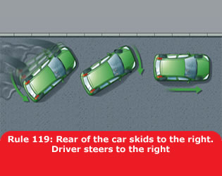
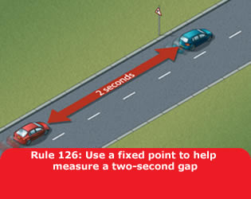
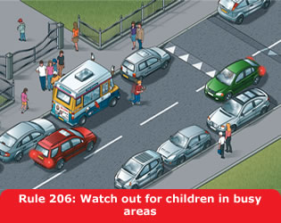

Rules for pedestrians (1 to 35)
Notes
1. General guidance (1 to 6)
1
Pavements (including any path along the side of a
road) should be used if provided. Where possible, avoid being next to
the kerb with your back to the traffic. If you have to step into the
road, look both ways first. Always show due care and consideration
for others.
2
If there is no pavement, keep to the right-hand
side of the road so that you can see oncoming traffic. You should
take extra care and
- be prepared to walk in single file, especially on narrow roads or
in poor light
- keep close to the side of the road.
It may be safer to cross the road well before a sharp right-hand
bend so that oncoming traffic has a better chance of seeing you.
Cross back after the bend.
3
Help other road users to see you. Wear or carry
something light-coloured, bright or fluorescent in poor daylight
conditions. When it is dark, use reflective materials (e.g. armbands,
sashes, waistcoats, jackets, footwear), which can be seen by drivers
using headlights up to three times as far away as non-reflective
materials.

4
Young children should not be out alone on the
pavement or road (see Rule 7). When taking children out, keep between
them and the traffic and hold their hands firmly. Strap very young
children into push-chairs or use reins. When pushing a young child in
a buggy, do not push the buggy into the road when checking to see if
it is clear to cross, particularly from between parked vehicles.
5
Organised walks. Large groups of people walking
together should use a pavement if available; if one is not, they
should keep to the left. Look-outs should be positioned at the front
and back of the group, and they should wear fluorescent clothes in
daylight and reflective clothes in the dark. At night, the look-out
in front should show a white light and the one at the back a red
light. People on the outside of large groups should also carry lights
and wear reflective clothing.
6
Motorways. Pedestrians MUST NOT be
on motorways or slip roads except in an emergency (see Rule 271 and
Rule 275).
Laws RTRA sect 17, MT(E&W)R 1982 as amended, reg 15(1)(b)
& MT(S)R reg 13
2. Crossing the road (7 to 17)
7
The Green Cross Code. The advice given below on
crossing the road is for all pedestrians. Children should be taught
the Code and should not be allowed out alone until they can
understand and use it properly. The age when they can do this is
different for each child. Many children cannot judge how fast
vehicles are going or how far away they are. Children learn by
example, so parents and carers should always use the Code in full
when out with their children. They are responsible for deciding at
what age children can use it safely by themselves.
A. First find a safe place to cross and where there
is space to reach the pavement on the other side. Where there is a
crossing nearby, use it. It is safer to cross using a subway, a
footbridge, an island, a zebra, pelican, toucan or puffin crossing,
or where there is a crossing point controlled by a police officer, a
school crossing patrol or a traffic warden. Otherwise choose a place
where you can see clearly in all directions. Try to avoid crossing
between parked cars (see Rule 14), on a blind bend, or close to the
brow of a hill. Move to a space where drivers and riders can see you
clearly. Do not cross the road diagonally.
B. Stop just before you get to the kerb, where you
can see if anything is coming. Do not get too close to the traffic.
If there’s no pavement, keep back from the edge of the road but
make sure you can still see approaching traffic.
C. Look all around for traffic and listen. Traffic
could come from any direction. Listen as well, because you can
sometimes hear traffic before you see it.
D. If traffic is coming, let it pass. Look all
around again and listen. Do not cross until there is a safe gap in
the traffic and you are certain that there is plenty of time.
Remember, even if traffic is a long way off, it may be approaching
very quickly.
E. When it is safe, go straight across the road – do
not run. Keep looking and listening for traffic while you
cross, in case there is any traffic you did not see, or in case other
traffic appears suddenly. Look out for cyclists and motorcyclists
travelling between lanes of traffic. Do not walk diagonally across
the road.
8
At a junction. When crossing the road, look out for
traffic turning into the road, especially from behind you. If you
have started crossing and traffic wants to turn into the road, you
have priority and they should give way (see Rule 170).
9
Pedestrian Safety Barriers. Where there are
barriers, cross the road only at the gaps provided for pedestrians.
Do not climb over the barriers or walk between them and the road.
10
Tactile paving. Raised surfaces that can be felt
underfoot provide warning and guidance to blind or partially sighted
people. The most common surfaces are a series of raised studs, which
are used at crossing points with a dropped kerb, or a series of
rounded raised bars which are used at level crossings, at the top and
bottom of steps and at some other hazards.
11
One-way streets. Check which way the traffic is
moving. Do not cross until it is safe to do so without stopping. Bus
and cycle lanes may operate in the opposite direction to the rest of
the traffic.
12
Bus and cycle lanes. Take care when crossing these
lanes as traffic may be moving faster than in the other lanes, or
against the flow of traffic.
13
Routes shared with cyclists. Some cycle tracks run
alongside footpaths or pavements, using a segregating feature to
separate cyclists from people on foot. Segregated routes may also
incorporate short lengths of tactile paving to help visually impaired
people stay on the correct side. On the pedestrian side this will
comprise a series of flat-topped bars running across the direction of
travel (ladder pattern). On the cyclist side the same bars are
orientated in the direction of travel (tramline pattern). Not all
routes which are shared with cyclists are segregated. Take extra care
where this is so (see Rule 62.
14
Parked vehicles. If you have to cross between
parked vehicles, use the outside edges of the vehicles as if they
were the kerb. Stop there and make sure you can see all around and
that the traffic can see you. Make sure there is a gap between any
parked vehicles on the other side, so you can reach the pavement.
Never cross the road in front of, or behind, any vehicle with its
engine running, especially a large vehicle, as the driver may not be
able to see you.
15
Reversing vehicles. Never cross behind a vehicle
which is reversing, showing white reversing lights or sounding a
warning.
16
Moving vehicles. You MUST NOT get
onto or hold onto a moving vehicle.
Law RTA 1988 sect 26
17
At night. Wear something reflective to make it
easier for others to see you (see Rule 3). If there is no pedestrian
crossing nearby, cross the road near a street light so that traffic
can see you more easily.
18
At all crossings. When using any type of crossing
you should
- always check that the traffic has stopped before you start to
cross or push a pram onto a crossing
- always cross between the studs or over the zebra markings. Do not
cross at the side of the crossing or on the zig-zag lines, as it
can be dangerous.
You MUST NOT loiter on any type of crossing.
Laws ZPPPCRGD reg 19 & RTRA sect 25(5)
19
Zebra crossings. Give traffic plenty of time to see
you and to stop before you start to cross. Vehicles will need more
time when the road is slippery. Wait until traffic has stopped from
both directions or the road is clear before crossing. Remember that
traffic does not have to stop until someone has moved onto the
crossing. Keep looking both ways, and listening, in case a driver or
rider has not seen you and attempts to overtake a vehicle that has
stopped.

20
Where there is an island in the middle of a zebra crossing, wait on
the island and follow Rule 19 before you cross the second half of the
road – it is a separate crossing.

21
At traffic lights. There may be special signals for
pedestrians. You should only start to cross the road when the green
figure shows. If you have started to cross the road and the green
figure goes out, you should still have time to reach the other side,
but do not delay. If no pedestrian signals have been provided, watch
carefully and do not cross until the traffic lights are red and the
traffic has stopped. Keep looking and check for traffic that may be
turning the corner. Remember that traffic lights may let traffic move
in some lanes while traffic in other lanes has stopped.

22
Pelican crossings. These are signal-controlled
crossings operated by pedestrians. Push the control button to
activate the traffic signals. When the red figure shows, do not
cross. When a steady green figure shows, check the traffic has
stopped then cross with care. When the green figure begins to flash
you should not start to cross. If you have already started you should
have time to finish crossing safely.
23
Puffin crossings differ from pelican crossings as
the red and green figures are above the control box on your side of
the road and there is no flashing green figure phase. Press the
button and wait for the green figure to show.
24
When the road is congested, traffic on your side of the road may be
forced to stop even though their lights are green. Traffic may still
be moving on the other side of the road, so press the button and wait
for the signal to cross.
25
Toucan crossings are light-controlled crossings
which allow cyclists and pedestrians to share crossing space and
cross at the same time. They are push-button operated. Pedestrians
and cyclists will see the green signal together. Cyclists are
permitted to ride across.

26
At some crossings there is a bleeping sound or voice signal to
indicate to blind or partially sighted people when the steady green
figure is showing, and there may be a tactile signal to help
deafblind people.
27
Equestrian crossings are for horse riders. They
have pavement barriers, wider crossing spaces, horse and rider
figures in the light panels and either two sets of controls (one
higher), or just one higher control panel.

There is often a parallel crossing.
28
‘Staggered’ pelican or puffin
crossings. When the crossings on each side of the central
refuge are not in line they are two separate crossings. On reaching
the central island, press the button again and wait for a steady
green figure.
Image for Rule 28 – Staggered crossings (with an island in the
middle) are two separate crossings
29
Crossings controlled by an authorised person. Do
not cross the road unless you are signalled to do so by a police
officer, traffic warden or school crossing patrol. Always cross in
front of them.
30
Where there are no controlled crossing points available it is
advisable to cross where there is an island in the middle of the
road. Use the Green Cross Code (see Rule 7) to cross to the island
and then stop and use it again to cross the second half of the road.
Rules for users of powered wheelchairs and mobility scooters (36 to
46)
Notes
1. Powered wheelchairs and mobility scooters (36 to 37)
(Called Invalid Carriages in law)
36
There is one class of manual wheelchair (called a Class 1 invalid
carriage) and two classes of powered wheelchairs and powered mobility
scooters. Manual wheelchairs and Class 2 vehicles are those with an
upper speed limit of 4 mph (6 km/h) and are designed to be used on
pavements. Class 3 vehicles are those with an upper speed limit of 8
mph (12 km/h) and are equipped to be used on the road as well as the
pavement.
37
When you are on the road you should obey the guidance and rules for
other vehicles; when on the pavement you should follow the guidance
and rules for pedestrians.
2. On pavements (38 to 40)
38
Pavements are safer than roads and should be used when available.
You should give pedestrians priority and show consideration for other
pavement users, particularly those with a hearing or visual
impairment who may not be aware that you are there.
39
Powered wheelchairs and scooters MUST NOT travel
faster than 4 mph (6 km/h) on pavements or in pedestrian areas. You
may need to reduce your speed to adjust to other pavement users who
may not be able to move out of your way quickly enough or where the
pavement is too narrow.
Law UICHR 1988 reg 4
40
When moving off the pavement onto the road, you should take special
care. Before moving off, always look round and make sure it’s
safe to join the traffic. Always try to use dropped kerbs when moving
off the pavement, even if this means travelling further to locate
one. If you have to climb or descend a kerb, always approach it at
right angles and don’t try to negotiate a kerb higher than the
vehicle manufacturer’s recommendations.
3. On the road (41 to 46)
41
You should take care when travelling on the road as you may be
travelling more slowly than other traffic (your machine is restricted
to 8 mph (12 km/h) and may be less visible).
42
When on the road, Class 3 vehicles should travel in the direction of
the traffic. Class 2 users should always use the pavement when it is
available. When there is no pavement, you should use caution when on
the road. Class 2 users should, where possible, travel in the
direction of the traffic. If you are travelling at night when lights
MUST be used, you should travel in the direction of
the traffic to avoid confusing other road users.
Law UICHR 1988 reg 9
43
You MUST follow the same rules about using lights,
indicators and horns as for other road vehicles, if your vehicle is
fitted with them. At night, lights MUST be used. Be
aware that other road users may not see you and you should make
yourself more visible - even in the daytime and also at dusk - by,
for instance, wearing a reflective jacket or reflective strips on the
back of the vehicle.
Law UICHR 1988 reg 9
44
Take extra care at road junctions. When going straight ahead, check
to make sure there are no vehicles about to cross your path from the
left, the right, or overtaking you and turning left. There are
several options for dealing with right turns, especially turning from
a major road. If moving into the middle of the road is difficult or
dangerous, you can - stop on the left-hand side of the road and wait
for a safe gap in the traffic - negotiate the turn as a pedestrian,
i.e. travel along the pavement and cross the road between pavements
where it is safe to do so. Class 3 users should switch the vehicle to
the lower speed limit when on pavements.
If the junction is too hazardous, it may be worth considering an
alternative route. Similarly, when negotiating major roundabouts
(i.e. with two or more lanes) it may be safer for you to use the
pavement or find a route which avoids the roundabout altogether.
45
All normal parking restrictions should be observed. Your vehicle
should not be left unattended if it causes an obstruction to other
pedestrians - especially those in wheelchairs. Parking concessions
provided under the Blue Badge scheme (see Further reading and
conversions) will apply to those vehicles displaying a valid badge.
46
These vehicles MUST NOT be used on motorways (see
Rule 253). They should not be used on unrestricted dual carriageways
where the speed limit exceeds 50 mph (80 km/h) but if they are used
on these dual carriageways, they MUST have a
flashing amber beacon. A flashing amber beacon should be used on all
other dual carriageways (see Rule 220).
Laws RTRA sect 17(2) & (3), & RVLR reg 17(1) &
26
Rules about animals (47 to 58)
Notes
1. Horse-drawn vehicles (47 to 48)
47
Horse-drawn vehicles used on the highway should be operated and
maintained in accordance with standards set out in the Department for
Transport’s Code of Practice for Horse-Drawn Vehicles. This
Code lays down the requirements for a road driving assessment and
includes a comprehensive list of safety checks to ensure that a
carriage and its fittings are safe and in good working order. The
standards set out in the Road Driving Assessment may be required to
be met by a Local Authority if an operator wishes to obtain a local
authority licence to operate a passenger-carrying service.
48
Safety equipment and clothing. All horse-drawn
vehicles should have two red rear reflectors. It is safer not to
drive at night but if you do, a light showing white to the front and
red to the rear MUST be fitted.
Law RVLR 1989 reg 4
2. Horse riders (49 to 55)
49
Safety equipment. Children under the age of 14 MUST
wear a helmet which complies with the Regulations. It MUST be
fastened securely. Other riders should also follow these
requirements. These requirements do not apply to a child who is a
follower of the Sikh religion while wearing a turban.
Laws H(PHYR) Act 1990, sect 1 & H(PHYR) Regulations 1992,
reg 3
50
Other clothing. You should wear
- boots or shoes with hard soles and heels
- light-coloured or fluorescent clothing in daylight
- reflective clothing if you have to ride at night or in poor
visibility.
51
At night. It is safer not to ride on the road at
night or in poor visibility, but if you do, make sure you wear
reflective clothing and your horse has reflective bands above the
fetlock joints. A light which shows white to the front and red to the
rear should be fitted, with a band, to the rider’s right arm
and/or leg/riding boot. If you are leading a horse at night, carry a
light in your right hand, showing white to the front and red to the
rear, and wear reflective clothing on both you and your horse. It is
strongly recommended that a fluorescent/reflective tail guard is also
worn by your horse.
Riding
52
Before you take a horse on to a road, you should
- ensure all tack fits well and is in good condition
- make sure you can control the horse.
Always ride with other, less nervous horses if you think that your
horse will be nervous of traffic. Never ride a horse without both a
saddle and bridle.
53
Before riding off or turning, look behind you to make sure it is
safe, then give a clear arm signal.
When riding on the road you should
- keep to the left
- keep both hands on the reins unless you are signalling
- keep both feet in the stirrups
- not carry another person
- not carry anything which might affect your balance or get tangled
up with the reins
- keep a horse you are leading to your left
- move in the direction of the traffic flow in a one-way street
- never ride more than two abreast, and ride in single file on
narrow or busy roads and when riding round bends.
54
You MUST NOT take a horse onto a footpath or
pavement, and you should not take a horse onto a cycle track. Use a
bridleway where possible. Equestrian crossings may be provided for
horse riders to cross the road and you should use these where
available (see Crossings). You should dismount at level crossings
where a ‘horse rider dismount’ sign is displayed.
Laws HA 1835 sect 72, R(S)A 1984, sect 129(5)
55
Avoid roundabouts wherever possible. If you use them you should -
keep to the left and watch out for vehicles crossing your path to
leave or join the roundabout - signal right when riding across exits
to show you are not leaving - signal left just before you leave the
roundabout.
3. Other animals (56 to 58)
56
Dogs. Do not let a dog out on the road on its own.
Keep it on a short lead when walking on the pavement, road or path
shared with cyclists or horse riders.
57
When in a vehicle make sure dogs or other animals are suitably
restrained so they cannot distract you while you are driving or
injure you, or themselves, if you stop quickly. A seat belt harness,
pet carrier, dog cage or dog guard are ways of restraining animals in
cars.
58
Animals being herded. These should be kept under
control at all times. You should, if possible, send another person
along the road in front to warn other road users, especially at a
bend or the brow of a hill. It is safer not to move animals after
dark, but if you do, then wear reflective clothing and ensure that
lights are carried (white at the front and red at the rear of the
herd).
Rules for cyclists (59 to 82)
Notes
These rules are in addition to those in the following sections,
which apply to all vehicles (except the motorway section). See also
You and your bicycle.
59
Clothing. You should wear
- a cycle helmet which conforms to current regulations, is the
correct size and securely fastened
- appropriate clothes for cycling. Avoid clothes which may get
tangled in the chain, or in a wheel or may obscure your lights
- light-coloured or fluorescent clothing which helps other road
users to see you in daylight and poor light
- reflective clothing and/or accessories (belt, arm or ankle bands)
in the dark.

60
At night your cycle MUST have
white front and red rear lights lit. It MUST also be
fitted with a red rear reflector (and amber pedal reflectors, if
manufactured after 1/10/85). White front reflectors and spoke
reflectors will also help you to be seen. Flashing lights are
permitted but it is recommended that cyclists who are riding in areas
without street lighting use a steady front lamp.
Law RVLR regs 13, 18 & 24
61
Cycle Routes and Other Facilities. Use cycle
routes, advanced stop lines, cycle boxes and toucan crossings unless
at the time it is unsafe to do so. Use of these facilities is not
compulsory and will depend on your experience and skills, but they
can make your journey safer.
62
Cycle Tracks. These are normally located away from
the road, but may occasionally be found alongside footpaths or
pavements. Cyclists and pedestrians may be segregated or they may
share the same space (unsegregated). When using segregated tracks you
MUST keep to the side intended for cyclists as the
pedestrian side remains a pavement or footpath. Take care when
passing pedestrians, especially children, older or disabled people,
and allow them plenty of room. Always be prepared to slow down and
stop if necessary. Take care near road junctions as you may have
difficulty seeing other road users, who might not notice you.
Law HA 1835 sect 72
63
Cycle Lanes. These are marked by a white line
(which may be broken) along the carriageway (see Rule 140). Keep
within the lane when practicable. When leaving a cycle lane check
before pulling out that it is safe to do so and signal your intention
clearly to other road users. Use of cycle lanes is not compulsory and
will depend on your experience and skills, but they can make your
journey safer.
64
You MUST NOT cycle on a pavement.
Laws HA 1835 sect 72 & R(S)A 1984, sect 129
65
Bus Lanes. Most bus lanes may be used by cyclists
as indicated on signs. Watch out for people getting on or off a bus.
Be very careful when overtaking a bus or leaving a bus lane as you
will be entering a busier traffic flow. Do not pass between the kerb
and a bus when it is at a stop.
66
You should
- keep both hands on the handlebars except when signalling or
changing gear
- keep both feet on the pedals
- never ride more than two abreast, and ride in single file on
narrow or busy roads and when riding round bends
- not ride close behind another vehicle
- not carry anything which will affect your balance or may get
tangled up with your wheels or chain
- be considerate of other road users, particularly blind and
partially sighted pedestrians. Let them know you are there when
necessary, for example, by ringing your bell if you have one. It is
recommended that a bell be fitted.
67
You should
- look all around before moving away from the kerb, turning or
manoeuvring, to make sure it is safe to do so. Give a clear signal
to show other road users what you intend to do (see ‘Signals
to other road users’
- look well ahead for obstructions in the road, such as drains,
pot-holes and parked vehicles so that you do not have to swerve
suddenly to avoid them. Leave plenty of room when passing parked
vehicles and watch out for doors being opened or pedestrians
stepping into your path
- be aware of traffic coming up behind you
- take extra care near road humps, narrowings and other traffic
calming features
- take care when overtaking (see Rules 162 to 169).
68
You MUST NOT
- carry a passenger unless your cycle has been built or adapted to
carry one
- hold onto a moving vehicle or trailer
- ride in a dangerous, careless or inconsiderate manner
- ride when under the influence of drink or drugs, including
medicine.
Law RTA 1988 sects 24, 26, 28, 29 & 30 as amended by
RTA 1991
69
You MUST obey all traffic signs and traffic light
signals.
Laws RTA 1988 sect 36 & TSRGD reg 10(1)
70
When parking your cycle
- find a conspicuous location where it can be seen by passers-by
- use cycle stands or other cycle parking facilities wherever
possible
- do not leave it where it would cause an obstruction or hazard to
other road users
- secure it well so that it will not fall over and become an
obstruction or hazard.
71
You MUST NOT cross the stop line when the traffic
lights are red. Some junctions have an advanced stop line to enable
you to wait and position yourself ahead of other traffic (see Rule
178).
Laws RTA 1988 sect 36 & TSRGD regs 10 &
36(1)
2. Road junctions (72 to 75)
72
On the left. When approaching a junction on the
left, watch out for vehicles turning in front of you, out of or into
the side road. Just before you turn, check for undertaking cyclists
or motorcyclists. Do not ride on the inside of vehicles signalling or
slowing down to turn left.
73
Pay particular attention to long vehicles which need a lot of room
to manoeuvre at corners. Be aware that drivers may not see you. They
may have to move over to the right before turning left. Wait until
they have completed the manoeuvre because the rear wheels come very
close to the kerb while turning. Do not be tempted to ride in the
space between them and the kerb.
74
On the right. If you are turning right, check the
traffic to ensure it is safe, then signal and move to the centre of
the road. Wait until there is a safe gap in the oncoming traffic and
give a final look before completing the turn. It may be safer to wait
on the left until there is a safe gap or to dismount and push your
cycle across the road.
75
Dual carriageways. Remember that traffic on most
dual carriageways moves quickly. When crossing wait for a safe gap
and cross each carriageway in turn. Take extra care when crossing
slip roads.
3. Roundabouts (76 to 78)
76
Full details about the correct procedure at roundabouts are
contained in (see Rules 184 to 190). Roundabouts can be hazardous and
should be approached with care.
77
You may feel safer walking your cycle round on the pavement or
verge. If you decide to ride round keeping to the left-hand lane you
should
- be aware that drivers may not easily see you
- take extra care when cycling across exits. You may need to signal
right to show you are not leaving the roundabout
- watch out for vehicles crossing your path to leave or join the
roundabout.
78
Give plenty of room to long vehicles on the roundabout as they need
more space to manoeuvre. Do not ride in the space they need to get
round the roundabout. It may be safer to wait until they have cleared
the roundabout.
4. Crossing the road (79 to 82)
79
Do not ride across equestrian crossings, as they are for horse
riders only. Do not ride across a pelican, puffin or zebra crossing.
Dismount and wheel your cycle across.
80
Toucan crossings. These are light-controlled
crossings which allow cyclists and pedestrians to share crossing
space and cross at the same time. They are push-button operated.
Pedestrians and cyclists will see the green signal together. Cyclists
are permitted to ride across.
81
Cycle-only crossings. Cycle tracks on opposite
sides of the road may be linked by signalled crossings. You may ride
across but you MUST NOT cross until the green cycle
symbol is showing.
Law TSRGD regs 33(2) & 36(1)
82
Level crossings/Tramways. Take extra care when
crossing the tracks (see Rule 306). You should dismount at level
crossings where a ‘cyclist dismount’ sign is displayed.
Make sure that you feel confident of your ability to ride safely on
the road. Be sure that
- you choose the right size and type of cycle for comfort and
safety
- lights and reflectors are kept clean and in good working order
- tyres are in good condition and inflated to the pressure shown on
the tyre
- gears are working correctly
- the chain is properly adjusted and oiled
- the saddle and handlebars are adjusted to the correct height.
It is recommended that you fit a bell to your cycle.
You MUST
- ensure your brakes are efficient
- at night, use lit front and rear lights and have a red rear
reflector.
Laws PCUR regs 6 & 10 & RVLR reg 18
Cycle training can help both children and adults, especially those
adults returning to cycling to develop the skills needed to cycle
safely on today’s roads. A new national cycle training standard
has been developed which the Government is promoting and making
funding available for delivery in schools.
All cyclists should consider the benefits of undertaking cycle
training. For information, contact your local authority.
Rules for motorcyclists (83 to 88)
Notes
1. General guidance (83 to 88)
These Rules are in addition to those in the following sections which
apply to all vehicles. See Motorcycle licence requirements).
83
On all journeys, the rider and pillion passenger on a motorcycle,
scooter or moped MUST wear a protective helmet. This
does not apply to a follower of the Sikh religion while wearing a
turban. Helmets MUST comply with the Regulations and
they MUST be fastened securely. Riders and
passengers of motor tricycles and quadricycles, also called
quadbikes, should also wear a protective helmet. Before each journey
check that your helmet visor is clean and in good condition.
Laws RTA 1988 sects 16 & 17 & MC(PH)R as amended reg
4
84
It is also advisable to wear eye protectors, which
MUST comply with the Regulations. Scratched or
poorly fitting eye protectors can limit your view when riding,
particularly in bright sunshine and the hours of darkness. Consider
wearing ear protection. Strong boots, gloves and suitable clothing
may help to protect you if you are involved in a collision.
Laws RTA sect 18 & MC(EP)R as amended reg 4
85
You MUST NOT carry more than one pillion passenger
who MUST sit astride the machine on a proper seat.
They should face forward with both feet on the footrests. You
MUST NOT carry a pillion passenger unless your motor
cycle is designed to do so. Provisional licence holders MUST
NOT carry a pillion passenger.
Laws RTA 1988 sect 23, MV(DL)R 1999 reg 16(6) & CUR 1986
reg 102
86
Daylight riding. Make yourself as visible as
possible from the side as well as the front and rear. You could wear
a light or brightly coloured helmet and fluorescent clothing or
strips. Dipped headlights, even in good daylight, may also make you
more conspicuous. However, be aware that other vehicle drivers may
still not have seen you, or judged your distance or speed correctly,
especially at junctions.
87
Riding in the dark. Wear reflective clothing or
strips to improve your visibility in the dark. These reflect light
from the headlamps of other vehicles, making you visible from a
longer distance. See Rules 113–116 for lighting requirements.
88
Manoeuvring. You should be aware of what is behind
and to the sides before manoeuvring. Look behind you; use mirrors if
they are fitted. When in traffic queues look out for pedestrians
crossing between vehicles and vehicles emerging from junctions or
changing lanes. Position yourself so that drivers in front can see
you in their mirrors. Additionally, when filtering in slow-moving
traffic, take care and keep your speed low.
Remember: Observation – Signal –
Manoeuvre.
2. Motorcycle licence requirements
If you have a provisional motorcycle licence, you
MUST satisfactorily complete a Compulsory Basic
Training (CBT) course.
You can then ride unaccompanied on the public road a motorcycle up
to 125 cc, with a power output not exceeding 11 kW, with L plates (in
Wales either D plates or L plates, or both, can be used), for up to
two years.
To ride a moped, learners MUST:
- be 16 or over
- have a provisional moped licence
- complete CBT training.
You can then ride unaccompanied on the public road a two-wheeled
vehicle with a maximum design speed of 45 km/h (28 mph), with L
plates (in Wales either D plates or L plates, or both, can be used),
for up to two years.
You MUST first pass the theory test for motorcycles
and then the moped practical test to obtain your full moped licence.
If you passed your car driving test before 1 February 2001 you are
qualified to ride a moped without L plates (and/or D plates in
Wales), although it is recommended that you complete CBT before
riding on the road. If you passed your car driving test after this
date you MUST complete CBT before riding a moped on
the road.
Licence categories for mopeds and motorcycles
Category AM (moped) – minimum age 16
- two-wheeled vehicle with a maximum design speed of 45 km/h (28
mph)
- three- or four-wheeled vehicle with a maximum design speed over
25 km/h (15.5 mph), up to 50 cc and with a power output not
exceeding 4 kW.
Category A1 – minimum age 17
- motorcycles up to 125 cc, with a power output not exceeding 11 kW
- tricycles with a power output not exceeding 15 kW.
Category A2 – minimum age 19
- motorcycles with a power output not exceeding 35 kW.
Category A
- unrestricted motorcycles with a power output over 35 kW (minimum
age 24 under direct access, or 21 under progressive access)
- tricycles with a power output over 15 kW (minimum age 21).
Progressive access is a process that allows a rider to take a
higher-category practical test if they already have at least two
years’ experience on a lower-category motorcycle. For example,
if you have held a category A2 licence for a minimum of two years,
you can take the category A practical test at age 21. There is no
requirement to take another theory test.
If you want to learn to ride motorcycles larger than 125 cc and with
a power output over 11 kW, you MUST meet the minimum
age requirements, satisfactorily complete a CBT course and be
accompanied by an approved instructor on another motorcycle in radio
contact.
To obtain your full moped or motorcycle licence you
MUST pass a motorcycle theory test and modules 1 and
2 practical tests on a two-wheeled motorcycle.
You MUST NOT carry a pillion passenger or pull a
trailer until you have passed your test. Also see Rule 253 covering
vehicles prohibited from motorways.
Law MV(DL)R reg 16
Rules for drivers and motorcyclists (89 to 102)
Notes
1. Vehicle condition (89)
89
Vehicle condition. You MUST ensure
your vehicle and trailer comply with the full requirements of the
Road Vehicles (Construction and Use) Regulations and Road Vehicles
Lighting Regulations (see The road user and the law).
2. Fitness to drive (90 to 94)
90
Make sure that you are fit to drive. You
MUST report to the Driver and Vehicle Licensing
Agency (DVLA) any health
condition likely to affect your driving.
Law RTA 1988 sect 94
91
Driving when you are tired greatly increases your risk of collision.
To minimise this risk
- make sure you are fit to drive. Do not begin a journey if you are
tired. Get a good night’s sleep before embarking on a long
journey
- avoid undertaking long journeys between midnight and 6 am, when
natural alertness is at a minimum
- plan your journey to take sufficient breaks. A minimum break of
at least 15 minutes after every two hours of driving is recommended
- if you feel at all sleepy, stop in a safe place. Do not stop on
the hard shoulder of a motorway
- the most effective ways to counter sleepiness are to drink, for
example, two cups of caffeinated coffee and to take a short nap (at
least 15 minutes)
92
Vision. You MUST be able to read a
vehicle number plate, in good daylight, from a distance of 20 metres
(or 20.5 metres where the old style number plate is used). If you
need to wear glasses (or contact lenses) to do this, you
MUST wear them at all times while driving. The
police have the power to require a driver to undertake an eyesight
test.
Laws RTA 1988 sect 96 & MV(DL)R reg 40 & sch
8
93
Slow down, and if necessary stop, if you are dazzled by bright
sunlight.
94
At night or in poor visibility, do not use tinted glasses, lenses or
visors if they restrict your vision.
3. Alcohol and drugs (95 to 96)
95
Do not drink and drive as it will seriously affect
your judgement and abilities.
In England and Wales you MUST NOT drive with a
breath alcohol level higher than 35 microgrammes/100 millilitres of
breath or a blood alcohol level of more than 80 milligrammes/100
millilitres of blood.
In Scotland the legal limits are lower. You MUST
NOT drive with a breath alcohol level higher than 22
microgrammes/100 millilitres of breath or a blood alcohol level of
more than 50 milligrammes/100 millilitres of blood.
Alcohol will
- give a false sense of confidence
- reduce co-ordination and slow down reactions
- affect judgement of speed, distance and risk
- reduce your driving ability, even if you’re below the legal
limit
- take time to leave your body; you may be unfit to drive in the
evening after drinking at lunchtime, or in the morning after
drinking the previous evening
The best solution is not to drink at all when planning to drive
because any amount of alcohol affects your ability to drive safely.
If you are going to drink, arrange another means of transport.
Laws RTA 1988 sects 4, 5 & 11(2), the Road Traffic 1988
PLSR
96
You MUST NOT drive under the influence of drugs or
medicine. For medicines, check with your doctor or pharmacist and do
not drive if you are advised that you may be impaired.
You MUST NOT drive if you have illegal drugs or
certain medicines in your blood above specified limits. It is highly
dangerous so never take illegal drugs if you intend to drive; the
effects are unpredictable, but can be even more severe than alcohol
and result in fatal or serious road crashes. Illegal drugs have been
specified at very low levels so even small amounts of use could be
above the specified limits. The limits for certain medicines have
been specified at higher levels, above the levels generally found in
the blood of patients who have taken normal therapeutic doses. If you
are found to have a concentration of a drug above its specified limit
in your blood because you have been prescribed or legitimately
supplied a particularly high dose of medicine, then you can raise a
statutory medical defence, provided your driving was not impaired by
the medicine you are taking.
Law RTA 1988 sects 4 & 5
4. Before setting off (97)
97
Before setting off. You should ensure that
- you have planned your route and allowed sufficient time
- clothing and footwear do not prevent you using the controls in
the correct manner
- you know where all the controls are and how to use them before
you need them. Not all vehicles are the same; do not wait until it
is too late to find out
- your mirrors and seat are adjusted correctly to ensure comfort,
full control and maximum vision
- head restraints are properly adjusted to reduce the risk of neck
and spine injuries in the event of a collision
- you have sufficient fuel before commencing your journey,
especially if it includes motorway driving. It can be dangerous to
lose power when driving in traffic
- ensure your vehicle is legal and roadworthy
- switch off your mobile phone
5. Vehicle towing and loading (98)
98
Vehicle towing and loading. As a driver
- you MUST NOT tow more than your licence permits.
If you passed a car test after 1 Jan 1997 you are restricted on the
weight of trailer you can tow
- you MUST NOT overload your vehicle or trailer.
You should not tow a weight greater than that recommended by the
manufacturer of your vehicle
- you MUST secure your load and it MUST
NOT stick out dangerously. Make sure any heavy or sharp
objects and any animals are secured safely. If there is a
collision, they might hit someone inside the vehicle and cause
serious injury
- you should properly distribute the weight in your caravan or
trailer with heavy items mainly over the axle(s) and ensure a
downward load on the tow ball. Manufacturer’s recommended
weight and tow ball load should not be exceeded. This should avoid
the possibility of swerving or snaking and going out of control. If
this does happen, ease off the accelerator and reduce speed gently
to regain control
- carrying a load or pulling a trailer may require you to adjust
the headlights
In the event of a breakdown, be aware that towing a vehicle on a tow
rope is potentially dangerous. You should consider professional
recovery.
Laws CUR reg 100 & MV(DL)R reg 43
6. Seat belts and child restraints (99 to 102)
99
You MUST wear a seat belt in cars, vans and other
goods vehicles if one is fitted (see table below). Adults, and
children aged 14 years and over, MUST use a seat
belt or child restraint, where fitted, when seated in minibuses,
buses and coaches. Exemptions are allowed for the holders of medical
exemption certificates and those making deliveries or collections in
goods vehicles when travelling less than 50 metres (approx 162
feet).
Laws RTA 1988 sects 14 & 15, MV(WSB)R, MV(WSBCFS)R &
MV(WSB)(A)R
Seat Belt Requirements. This table summarises the
main legal requirements for wearing seat belts in cars, vans and
other goods vehicles.
| Seat Belt Requirements |
Front seat |
Rear seat |
Who is responsible? |
| Driver |
Seat belt MUST be worn if fitted |
|
Driver |
| Child under 3 years of age |
Correct child restraint MUST be used |
Correct child restraint MUST be used. If one
is not available in a taxi, may travel unrestrained. |
Driver |
| Child from 3rd birthday up to 1.35 metres in height (or 12th
birthday, whichever they reach first) |
Correct child restraint MUST be used |
Correct child restraint MUST be used where
seat belts fitted. MUST use adult belt if
correct child restraint is not available in a licensed taxi or
private hire vehicle, or for reasons of unexpected necessity
over a short distance, or if two occupied restraints prevent
fitment of a third. |
Driver |
| Child over 1.35 metres (approx 4ft 5ins) in height or 12 or
13 years |
Adult seat belt MUST be worn if available |
Adult seat belt MUST be worn if available |
Driver |
| Adult passengers aged 14 and over |
Seat belt MUST be worn if available |
Seat belt MUST be worn if available |
Passenger |
100
The driver MUST ensure that all children under 14
years of age in cars, vans and other goods vehicles wear seat belts
or sit in an approved child restraint where required (see table
above). If a child is under 1.35 metres (approx 4 feet 5 inches)
tall, a baby seat, child seat, booster seat or booster cushion
MUST be used suitable for the child’s weight
and fitted to the manufacturer’s instructions.
Laws RTA 1988 sects 14 & 15, MV(WSB)R, MV(WSBCFS)R &
MV(WSB)(A)R
101
A rear-facing baby seat MUST NOT be fitted into a
seat protected by an active frontal airbag, as in a crash it can
cause serious injury or death to the child.
Laws RTA 1988 sects 14 & 15, MV(WSB)R, MV(WSBCFS)R &
MV(WSB)(A)R
102
Children in cars, vans and other goods vehicles.
Drivers who are carrying children in cars, vans and other goods
vehicles should also ensure that
- children should get into the vehicle through the door nearest the
kerb
- child restraints are properly fitted to manufacturer’s
instructions
- children do not sit behind the rear seats in an estate car or
hatchback, unless a special child seat has been fitted
- the child safety door locks, where fitted, are used when children
are in the vehicle
- children are kept under control.
7. Motorcycle licence requirements
If you have a provisional motorcycle licence, you
MUST satisfactorily complete a Compulsory Basic
Training (CBT) course.
You can then ride a motorcycle up to 125 cc with a power output not
exceeding 11 kW on the public road, with L plates (in Wales either D
plates, L plates or both can be used), for up to two years. Under
direct access you can practise on a motorcycle that exceeds 125 cc
provided that
- you meet the minimum age for the category concerned
- you’re accompanied at all times by a qualified approved
trainer, who is on another motorcycle and in radio contact with you
- fluorescent or reflective safety clothing is worn during
supervision
- red L plates (D plates in Wales) are fitted and provisional
licence restrictions followed.
To obtain your full motorcycle licence you MUST pass a motorcycle
theory test and then a practical test.
Law MV(DL)R regs 16 & 68
A1 motorcycle licence: At age 17 or over, you take
a test on a motorcycle without sidecar of between 120 and 125 cc. If
you pass you may ride a motorcycle up to 125 cc with power output up
to 11 kW, or a motor tricycle with power not exceeding 15 kW.
A2 motorcycle licence: At age 19 or over, you take
a test on a motorcycle without sidecar of at least 395 cc with a
power output of at least 25 kW but not exceeding 35 kW. If you pass,
you may ride any motorcycle not exceeding 35 kW and with a power to
weight ratio not exceeding 0.2 kW/kg.
Full A motorcycle licence: Test taken on a
motorcycle without sidecar, of at least 595 cc and an engine power of
at least 40 kW This gives you full access to all motorcycles and
motor tricycles. You obtain a category A licence by taking
progressive access from age 21, or under the direct access scheme
from age 24.
Category A under progressive access: You can take a
category A practical test at age 21 if you already have an A2 licence
that you’ve held for a minimum of two years. You don’t
need to take another theory test or hold a CBT certificate.
Category A under direct access: This is for riders
aged 24 or over. To obtain a category A licence you must
- successfully complete a CBT course
- pass the motorcycle theory test
- pass the practical motorcycle test.
Passing the practical test on a motorcycle of at least 40 kW
(53.6bhp) gives immediate access to all sizes of motorcycle.
You MUST NOT carry a pillion passenger or pull a
trailer until you have passed your test. Also see Rule 253 covering
vehicles prohibited from motorways.
Law MV(DL)R reg 16
Moped licence requirements
A moped MUST have an engine capacity not exceeding
50 cc, not weigh more than 250kg and be designed to have a maximum
speed not exceeding 28mph (45 km/h). Before June 2003 a licence
allowed the riding of mopeds up to 50km/h.
To ride a moped, learners MUST
- be 16 or over
- have a provisional moped licence
- complete CBT
training.
You MUST first pass the theory test for motorcycles
and then the moped practical test to obtain your full moped licence.
If you passed your car driving test before 1 February 2001 you are
qualified to ride a moped without L plates (and/or D plates in
Wales), although it is recommended that you complete CBT before riding on the
road. If you passed your car driving test after this date you
MUST complete CBT before riding a moped on
the road.
Laws RTA 1988 sects 97(e) & 101 & MV(DL)R regs 38(4)
& 43
8. Motor vehicle documentation and learner driver requirements
Documents
Driving licence. You MUST have a
valid driving licence for the category of motor vehicle you are
driving. You MUST inform the Driver and Vehicle
Licensing Agency (DVLA) if you
change your name and/or address.
Law RTA 1988 sects 87 & 99(4)
Holders of non-European Community licences who are now resident in
the UK may only drive on that licence for a maximum of 12 months from
the date they become resident in this country. To ensure continuous
driving entitlement
- a British provisional licence should be obtained and a driving
test(s) passed before the 12-month period elapses, or
- in the case of a driver who holds a licence from a country which
has been designated in law for licence exchange purposes, the
driver should exchange the licence for a British one.
MOT. Cars and motorcycles MUST
normally pass an MOT test three years from the date of the first
registration and every year after that. You MUST NOT
drive a motor vehicle without an MOT certificate when it should have
one. Exceptionally, you may drive to a pre-arranged test appointment
or to a garage for repairs required for the test. Driving an
unroadworthy motor vehicle may invalidate your insurance. From
November 2012, motor vehicles manufactured before 1960 will be
exempted from an MOT requirement, although they can still be
submitted for a test voluntarily. Owners are still legally required
to ensure their vehicle is safe and roadworthy.
Law RTA 1988 sects 45, 47, 49 & 53
Insurance. To use a motor vehicle on the road, you
MUST have a valid insurance policy. This
MUST at least cover you for injury or damage to a
third party while using that motor vehicle. Before driving any motor
vehicle, make sure that it has this cover for your use or that your
own insurance provides adequate cover. You MUST NOT
drive a motor vehicle without insurance. Also, be aware that even if
a road traffic incident is not your fault, you may still be held
liable by insurance companies.
Law RTA 1988 sect 143
Uninsured drivers can now be automatically detected by roadside
cameras. Further to the penalties for uninsured driving (see
‘Penalty table’), an offender’s vehicle can now be
seized by the Police, taken away and crushed. Law RTA 1988,
sects 165a & 165b
The types of cover available are indicated below:
Third-Party insurance - this is often the cheapest
form of insurance, and is the minimum cover required by law. It
covers anyone you might injure or whose property you might damage. It
does not cover damage to your own motor vehicle or injury to
yourself.
Third-Party, Fire and Theft insurance - similar to
third-party, but also covers you against your motor vehicle being
stolen, or damaged by fire.
Comprehensive insurance - this is the most
expensive but the best insurance. Apart from covering other persons
and property against injury or damage, it also covers damage to your
own motor vehicle, up to the market value of that vehicle, and
personal injury to yourself.
Registration certificate. Registration certificates
(also called harmonised registration certificates) are issued for all
motor vehicles used on the road, describing them (make, model, etc)
and giving details of the registered keeper. You
MUST notify the Driver and Vehicle Licensing Agency
in Swansea as soon as possible when you buy or sell a motor vehicle,
or if you change your name or address. For registration certificates
issued after 27 March 1997, the buyer and seller are responsible for
completing the registration certificates. The seller is responsible
for forwarding them to DVLA. The
procedures are explained on the back of the registration
certificates.
Law RV(R&L)R regs 21, 22, 23 & 24
Vehicle Excise Duty (VED). Vehicle Excise Duty
MUST be paid on all motor vehicles used or kept on
public roads. Law VERA sects 29 and 33
Statutory Off-Road Notification (SORN). This
is a notification to the DVLA that a motor
vehicle is not being used on the road. If you are the vehicle keeper
and want to keep a motor vehicle untaxed and off the public road you
MUST declare SORN - it is an
offence not to do so. The vehicle will remain SORN until you sell,
tax or scrap it. If your vehicle is unused or off the road it MUST
have either a SORN declaration or
valid insurance. Law RV(RL)R 2002, reg 26 sched 4
Production of documents. You MUST
be able to produce your driving licence, a valid insurance
certificate and (if appropriate) a valid MOT certificate, when
requested by a police officer. If you cannot do this you may be asked
to take them to a police station within seven days.
Law RTA 1988 sects 164 & 165
Learner drivers
Learners driving a car MUST hold a valid provisional licence. They
MUST be supervised by someone at least 21 years old
who holds a full EC/EEA licence for that type of car (automatic or
manual) and has held one for at least three years.
Laws MV(DL)R reg 16 & RTA 1988 sect 87
Vehicles. Any vehicle driven by a learner
MUST display red L plates. In Wales, either red D
plates, red L plates, or both, can be used. Plates MUST conform to
legal specifications and MUST be clearly visible to
others from in front of the vehicle and from behind. Plates should be
removed or covered when not being driven by a learner (except on
driving school vehicles).
Law MV(DL)R reg 16 & sched 4
You MUST pass the theory test (if one is required)
and then a practical driving test for the category of vehicle you
wish to drive before driving unaccompanied.
Law MV(DL)R reg 40
General rules, techniques and advice for all drivers and riders
(103 to 158)
Notes
This section should be read by all drivers, motorcyclists, cyclists
and horse riders. The rules in The Highway Code do
not give you the right of way in any circumstance, but they advise
you when you should give way to others. Always give way if it can
help to avoid an incident.
103
Signals warn and inform other road users, including pedestrians (see
‘Signals to other road users’), of your intended actions.
You should always
- give clear signals in plenty of time, having checked it is not
misleading to signal at that time
- use them to advise other road users before changing course or
direction, stopping or moving off
- cancel them after use
- make sure your signals will not confuse others. If, for instance,
you want to stop after a side road, do not signal until you are
passing the road. If you signal earlier it may give the impression
that you intend to turn into the road. Your brake lights will warn
traffic behind you that you are slowing down
- use an arm signal to emphasise or reinforce your signal if
necessary. Remember that signalling does not give you priority.
104
You should also
- watch out for signals given by other road users and proceed only
when you are satisfied that it is safe
- be aware that an indicator on another vehicle may not have been
cancelled.
105
You MUST obey signals given by police officers,
traffic officers, traffic wardens (see ‘Signals by authorised
persons’). and signs used by school crossing patrols.
Laws RTRA sect 28, RTA 1988 sect 35, TMA 2004 sect 6, &
FTWO art 3
106
Police stopping procedures. If the police want to
stop your vehicle they will, where possible, attract your attention
by
- flashing blue lights, headlights or sounding their siren or horn,
usually from behind
- directing you to pull over to the side by pointing and/or using
the left indicator.
You MUST then pull over and stop as soon as it is
safe to do so. Then switch off your engine.
Law RTA 1988 sect 163
3. Other stopping procedures (107 to 112)
107
Driver and Vehicle Standards Agency officers have powers to stop
vehicles on all roads, including motorways and trunk roads, in
England and Wales. They will attract your attention by flashing amber
lights
- either from the front requesting you to follow them to a safe
place to stop
- or from behind directing you to pull over to the side by pointing
and/or using the left indicator.
It is an offence not to comply with their directions. You
MUST obey any signals given (see ‘Signals by
authorised persons’).
Laws RTA 1988, sect 67, & PRA 2002, sect 41 & sched
5(8)
108
Traffic officers have powers to stop vehicles on
most motorways and some ‘A’ class roads, in England only.
If traffic officers in uniform want to stop your vehicle on safety
grounds (e.g. an insecure load) they will, where possible, attract
your attention by
- flashing amber lights, usually from behind
- directing you to pull over to the side by pointing and/or using
the left indicator.
You MUST then pull over and stop as soon as it is
safe to do so. Then switch off your engine. It is an offence not to
comply with their directions (see ‘Signals by authorised
persons’).
Law RTA1988, sects 35 &163 as amended by TMA 2004, sect
6
109
Traffic light signals and traffic signs. You
MUST obey all traffic light signals (see
‘Light signals controlling traffic’) and traffic signs
giving orders, including temporary signals & signs (see
‘Traffic signs’). Make sure you know, understand and act
on all other traffic and information signs and road markings (see
‘Road markings’) and Vehicle markings’).
Laws RTA 1988 sect 36 & TSRGD regs 10, 15, 16, 25, 26,
27, 28, 29, 36, 38 & 40
110
Flashing headlights. Only flash your headlights to
let other road users know that you are there. Do not flash your
headlights to convey any other message or intimidate other road
users.
111
Never assume that flashing headlights is a signal inviting you to
proceed. Use your own judgement and proceed carefully.
112
The horn. Use only while your vehicle is moving and
you need to warn other road users of your presence. Never sound your
horn aggressively. You MUST NOT use your horn
- while stationary on the road
- when driving in a built-up area between the hours of 11.30 pm and
7.00 am
except when another road user poses a danger.
Law CUR reg 99
4. Lighting requirements (113 to 116)
113
You MUST
- ensure all sidelights and rear registration plate lights are lit
between sunset and sunrise
- use headlights at night, except on a road which has lit street
lighting. These roads are generally restricted to a speed limit of
30 mph (48 km/h) unless otherwise specified
- use headlights when visibility is seriously reduced (see Rule
226).
Night (the hours of darkness) is defined as the period between half
an hour after sunset and half an hour before sunrise).
Laws RVLR regs 3, 24, & 25, (In Scotland - RTRA 1984 sect
82 (as amended by NRSWA, para 59 of sched 8))
114
You MUST NOT
- use any lights in a way which would dazzle or cause discomfort to
other road users, including pedestrians, cyclists and horse riders
- use front or rear fog lights unless visibility is seriously
reduced. You MUST switch them off when visibility
improves to avoid dazzling other road users (see Rule 226).
In stationary queues of traffic, drivers should apply the parking
brake and, once the following traffic has stopped, take their foot
off the footbrake to deactivate the vehicle brake lights. This will
minimise glare to road users behind until the traffic moves
again.
Law RVLR reg 27
115
You should also
- use dipped headlights, or dim-dip if fitted, at night in built-up
areas and in dull daytime weather, to ensure that you can be seen
- keep your headlights dipped when overtaking until you are level
with the other vehicle and then change to main beam if necessary,
unless this would dazzle oncoming road users
- slow down, and if necessary stop, if you are dazzled by oncoming
headlights
116
Hazard warning lights. These may be used when your
vehicle is stationary, to warn that it is temporarily obstructing
traffic. Never use them as an excuse for dangerous or illegal
parking. You MUST NOT use hazard warning lights
while driving or being towed unless you are on a motorway or
unrestricted dual carriageway and you need to warn drivers behind you
of a hazard or obstruction ahead. Only use them for long enough to
ensure that your warning has been observed.
Law RVLR reg 27
5. Control of the vehicle (117 to 126)
Braking
117
In normal circumstances. The safest way to brake is
to do so early and lightly. Brake more firmly as you begin to stop.
Ease the pressure off just before the vehicle comes to rest to avoid
a jerky stop.
118
In an emergency. Brake immediately. Try to avoid
braking so harshly that you lock your wheels. Locked wheels can lead
to loss of control.
119
Skids. Skidding is usually caused by the driver
braking, accelerating or steering too harshly or driving too fast for
the road conditions. If skidding occurs, remove the cause by
releasing the brake pedal fully or easing off the accelerator. Turn
the steering wheel in the direction of the skid. For example, if the
rear of the vehicle skids to the right, steer immediately to the
right to recover.

120
ABS. If your vehicle is fitted with anti-lock
brakes, you should follow the advice given in the vehicle handbook.
However, in the case of an emergency, apply the footbrake firmly; do
not release the pressure until the vehicle has slowed to the desired
speed. The ABS should ensure that steering control will be retained,
but do not assume that a vehicle with ABS will stop in a shorter
distance.
121
Brakes affected by water. If you have driven
through deep water your brakes may be less effective. Test them at
the first safe opportunity by pushing gently on the brake pedal to
make sure that they work. If they are not fully effective, gently
apply light pressure while driving slowly. This will help to dry them
out.
122
Coasting. This term describes a vehicle travelling
in neutral or with the clutch pressed down. It can reduce driver
control because
- engine braking is eliminated
- vehicle speed downhill will increase quickly
- increased use of the footbrake can reduce its effectiveness
- steering response will be affected, particularly on bends and
corners
- it may be more difficult to select the appropriate gear when
needed.
The Driver and the Environment
123
You MUST NOT leave a parked vehicle unattended with
the engine running or leave a vehicle engine running unnecessarily
while that vehicle is stationary on a public road. Generally, if the
vehicle is stationary and is likely to remain so for more than a
couple of minutes, you should apply the parking brake and switch off
the engine to reduce emissions and noise pollution. However it is
permissible to leave the engine running if the vehicle is stationary
in traffic or for diagnosing faults.
Law CUR regs 98 & 107
Speed Limits
| Type of vehicle |
Built-up areas* |
Single carriageways |
Dual carriageways |
Motorways |
| |
MPH (km/h) |
MPH (km/h) |
MPH (km/h) |
MPH (km/h) |
| Cars & motorcycles (including car
derived vans up to 2 tonnes maximum laden weight) |
30 (48) |
60 (96) |
70 (112) |
70 (112) |
| Cars towing caravans or trailers (including
car derived vans and motorcycles) |
30 (48) |
50 (80) |
60 (96) |
60 (96) |
| Buses, coaches and minibuses (not exceeding
12 metres in overall length |
30 (48) |
50 (80) |
60 (96) |
70 (112) |
| Goods vehicles (not exceeding 7.5 tonnes
maximum laden weight) |
30 (48) |
50 (80) |
60 (96) |
70† (112) |
| Goods vehicles (exceeding 7.5 tonnes
maximum laden weight) in England and Wales |
30 (48) |
50 (80) |
60 (96) |
60 (96) |
| Goods vehicles (exceeding 7.5 tonnes
maximum laden weight) in Scotland |
30 (48) |
40 (64) |
50 (80) |
60 (96) |
*The 30 mph limit usually applies to all traffic on all roads with
street lighting unless signs show otherwise. †60 mph (96 km/h)
if articulated or towing a trailer
Speed limits
124
You MUST NOT exceed the maximum speed limits for
the road and for your vehicle (see the table above). The presence of
street lights generally means that there is a 30 mph (48 km/h) speed
limit unless otherwise specified.
Law RTRA sects 81, 86, 89 & sch 6 (as amended by the
MV(VSL)(E&W) regs 2014)
125
The speed limit is the absolute maximum and does not mean it is safe
to drive at that speed irrespective of conditions. Driving at speeds
too fast for the road and traffic conditions is dangerous. You should
always reduce your speed when
- the road layout or condition presents hazards, such as bends
- sharing the road with pedestrians, cyclists and horse riders,
particularly children, and motorcyclists
- weather conditions make it safer to do so
- driving at night as it is more difficult to see other road users.
126
Stopping Distances. Drive at a speed that will
allow you to stop well within the distance you can see to be clear.
You should
- leave enough space between you and the vehicle in front so that
you can pull up safely if it suddenly slows down or stops. The safe
rule is never to get closer than the overall stopping distance (see
Typical Stopping Distances diagram, shown below)
- allow at least a two-second gap between you and the vehicle in
front on roads carrying faster-moving traffic and in tunnels where
visibility is reduced. The gap should be at least doubled on wet
roads and increased still further on icy roads
- remember, large vehicles and motorcycles need a greater distance
to stop. If driving a large vehicle in a tunnel, you should allow a
four-second gap between you and the vehicle in front.
If you have to stop in a tunnel, leave at least a 5-metre gap
between you and the vehicle in front.

See ‘Typical stopping distances’.
6. Lines and lane markings on the road (127 to 132)
See ‘Road markings’ to see diagrams of all lines.
127
A broken white line. This marks the centre of the
road. When this line lengthens and the gaps shorten, it means that
there is a hazard ahead. Do not cross it unless you can see the road
is clear and wish to overtake or turn off.
128
Double white lines where the line nearest to you is
broken. This means you may cross the lines to overtake if it
is safe, provided you can complete the manoeuvre before reaching a
solid white line on your side. White direction arrows on the road
indicate that you need to get back onto your side of the road.
129
Double white lines where the line nearest you is
solid. This means you MUST NOT cross or
straddle it unless it is safe and you need to enter adjoining
premises or a side road. You may cross the line if necessary,
provided the road is clear, to pass a stationary vehicle, or overtake
a pedal cycle, horse or road maintenance vehicle, if they are
travelling at 10 mph (16 km/h) or less.
Laws RTA 1988 sect 36 & TSRGD regs 10 & 26
130
Areas of white diagonal stripes or chevrons painted
on the road. These are to separate traffic lanes or to protect
traffic turning right.
- If the area is bordered by a broken white line, you should not
enter the area unless it is necessary and you can see that it is
safe to do so.
- If the area is marked with chevrons and bordered by solid white
lines you MUST NOT enter it except in an
emergency.
Laws MT(E&W)R regs 5, 9, 10 & 16, MT(S)R regs 4, 8,
9 & 14, RTA sect 36 & TSRGD 10(1)
131
Lane dividers. These are short, broken white lines
which are used on wide carriageways to divide them into lanes. You
should keep between them.
132
Reflective road studs may be used with white lines.
- White studs mark the lanes or the middle of the road.
- Red studs mark the left edge of the road.
- Amber studs mark the central reservation of a dual carriageway or
motorway.
- Green studs mark the edge of the main carriageway at lay-bys and
slip roads.
- Green/yellow studs indicate temporary adjustments to lane
layouts, e.g. where road works are taking place.
7. Multi-lane carriageways (133 to 143)
Lane discipline
133
If you need to change lane, first use your mirrors and if necessary
take a quick sideways glance to make sure you will not force another
road user to change course or speed. When it is safe to do so, signal
to indicate your intentions to other road users and when clear, move
over.
134
You should follow the signs and road markings and get into the lane
as directed. In congested road conditions do not change lanes
unnecessarily. Merging in turn is recommended but only if safe and
appropriate when vehicles are travelling at a very low speed, e.g.
when approaching road works or a road traffic incident. It is not
recommended at high speed.
Single carriageway
135
Where a single carriageway has three lanes and the road markings or
signs do not give priority to traffic in either direction
- use the middle lane only for overtaking or turning right.
Remember, you have no more right to use the middle lane than a
driver coming from the opposite direction
- do not use the right-hand lane.
136
Where a single carriageway has four or more lanes, use only the
lanes that signs or markings indicate.
Dual carriageways
A dual carriageway is a road which has a central reservation to
separate the carriageways.
137
On a two-lane dual carriageway you should stay in the left-hand
lane. Use the right-hand lane for overtaking or turning right. After
overtaking, move back to the left-hand lane when it is safe to do so.
138
On a three-lane dual carriageway, you may use the middle lane or the
right-hand lane to overtake but return to the middle and then the
left-hand lane when it is safe.
139
Climbing and crawler lanes. These are provided on
some hills. Use this lane if you are driving a slow-moving vehicle or
if there are vehicles behind you wishing to overtake. Be aware of the
signs and road markings which indicate the lane is about to end.
140
Cycle lanes. These are shown by road markings and
signs. You MUST NOT drive or park in a cycle lane
marked by a solid white line during its times of operation. Do not
drive or park in a cycle lane marked by a broken white line unless it
is unavoidable. You MUST NOT park in any cycle lane
whilst waiting restrictions apply.
Law RTRA sects 5 & 8
141
Bus lanes. These are shown by road markings and
signs that indicate which (if any) other vehicles are permitted to
use the bus lane. Unless otherwise indicated, you should not drive in
a bus lane during its period of operation. You may enter a bus lane
to stop, to load or unload where this is not prohibited.
142
High-occupancy vehicle lanes and other designated vehicle
lanes. Lanes may be restricted for use by particular types
of vehicle; these restrictions may apply some or all of the time. The
operating times and vehicle types will be indicated on the
accompanying traffic signs. You MUST NOT drive in
such lanes during their times of operation unless signs indicate that
your vehicle is permitted.
See ‘Traffic signs’ to see diagrams of traffic signs.
Vehicles permitted to use designated lanes may or may not include
cycles, buses, taxis, licensed private hire vehicles, motorcycles,
heavy goods vehicles (HGVs) and high-occupancy vehicles (HOVs). Where
HOV lanes are in operation, they MUST ONLY be used
by
- vehicles containing at least the minimum number of people
indicated on the traffic signs
- any other vehicles, such as buses and motorcycles, as indicated
on signs prior to the start of the lane, irrespective of the number
of occupants.
Laws RTRA sects 5 & 8, & RTA 1988, sect 36
143
One-way streets. Traffic MUST
travel in the direction indicated by signs. Buses and/or cycles may
have a contraflow lane. Choose the correct lane for your exit as soon
as you can. Do not change lanes suddenly. Unless road signs or
markings indicate otherwise, you should use
- the left-hand lane when going left
- the right-hand lane when going right
- the most appropriate lane when going straight ahead.
Remember – traffic could be passing on both sides.
Laws RTA 1988 sect 36 & RTRA sects 5 & 8
8. General advice (144 to 158)
144
You MUST NOT
- drive dangerously
- drive without due care and attention
- drive without reasonable consideration for other road
users.
Law RTA 1988 sects 2 & 3 as amended by RTA
1991
145
You MUST NOT drive on or over a pavement, footpath
or bridleway except to gain lawful access to property, or in the case
of an emergency.
Laws HA 1835 sect 72 & RTA 1988 sect 34
146
Adapt your driving to the appropriate type and
condition of road you are on. In particular
- do not treat speed limits as a target. It is often not
appropriate or safe to drive at the maximum speed limit
- take the road and traffic conditions into account. Be prepared
for unexpected or difficult situations, for example, the road being
blocked beyond a blind bend. Be prepared to adjust your speed as a
precaution
- where there are junctions, be prepared for road users emerging
- in side roads and country lanes look out for unmarked junctions
where nobody has priority
- be prepared to stop at traffic control systems, road works,
pedestrian crossings or traffic lights as necessary
- try to anticipate what pedestrians and cyclists might do. If
pedestrians, particularly children, are looking the other way, they
may step out into the road without seeing you.
147
Be considerate. Be careful of and considerate
towards all types of road users, especially those requiring extra
care (see Rule 204).
- you MUST NOT throw anything out of a vehicle;
for example, food or food packaging, cigarette ends, cans, paper or
carrier bags. This can endanger other road users, particularly
motorcyclists and cyclists.
- try to be understanding if other road users cause problems; they
may be inexperienced or not know the area well.
- be patient; remember that anyone can make a mistake.
- do not allow yourself to become agitated or involved if someone
is behaving badly on the road. This will only make the situation
worse. Pull over, calm down and, when you feel relaxed, continue
your journey.
- slow down and hold back if a road user pulls out into your path
at a junction. Allow them to get clear. Do not over-react by
driving too close behind to intimidate them.
Law EPA 1990 sect 87
148
Safe driving and riding needs concentration. Avoid
distractions when driving or riding such as
- loud music (this may mask other sounds)
- trying to read maps
- inserting a cassette or CD or tuning a radio
- arguing with your passengers or other road users
- eating and drinking
- smoking
You MUST NOT smoke in public transport vehicles or
in vehicles used for work purposes in certain prescribed
circumstances. Separate regulations apply to England, Wales and
Scotland.
Laws TSf(EV) regs 2007, TSfP(W) regs 2007 & TPSCP(S) regs
2006
Mobile phones and in-vehicle technology
149
You MUST exercise proper control of your vehicle at
all times. You MUST NOT use a hand-held mobile
phone, or similar device, when driving or when supervising a learner
driver, except to call 999 or 112 in a genuine emergency when it is
unsafe or impractical to stop. Never use a hand-held microphone when
driving. Using hands-free equipment is also likely to distract your
attention from the road. It is far safer not to use any telephone
while you are driving or riding - find a safe place to stop first or
use the voicemail facility and listen to messages later.
Laws RTA 1988 sects 2 & 3 & CUR regs 104 &
110
150
There is a danger of driver distraction being caused by in-vehicle
systems such as satellite navigation systems, congestion warning
systems, PCs, multi-media, etc. You MUST exercise
proper control of your vehicle at all times. Do not rely on driver
assistance systems such as cruise control or lane departure warnings.
They are available to assist but you should not reduce your
concentration levels. Do not be distracted by maps or screen-based
information (such as navigation or vehicle management systems) while
driving or riding. If necessary find a safe place to stop.
Laws RTA 1988 sects 2 & 3 & CUR reg 104
151
In slow-moving traffic. You should
- reduce the distance between you and the vehicle ahead to maintain
traffic flow
- never get so close to the vehicle in front that you cannot stop
safely
- leave enough space to be able to manoeuvre if the vehicle in
front breaks down or an emergency vehicle needs to get past
- not change lanes to the left to overtake
- allow access into and from side roads, as blocking these will add
to congestion
- be aware of cyclists and motorcyclists who may be passing on
either side.

Driving in built-up areas
152
Residential streets. You should drive slowly and
carefully on streets where there are likely to be pedestrians,
cyclists and parked cars. In some areas a 20 mph (32 km/h) maximum
speed limit may be in force. Look out for
- vehicles emerging from junctions or driveways
- vehicles moving off
- car doors opening
- pedestrians
- children running out from between parked cars
- cyclists and motorcyclists.
153
Traffic-calming measures. On some roads there are
features such as road humps, chicanes and narrowings which are
intended to slow you down. When you approach these features reduce
your speed. Allow cyclists and motorcyclists room to pass through
them. Maintain a reduced speed along the whole of the stretch of road
within the calming measures. Give way to oncoming road users if
directed to do so by signs. You should not overtake other moving road
users while in these areas.
Country roads
154
Take extra care on country roads and reduce your speed at approaches
to bends, which can be sharper than they appear, and at junctions and
turnings, which may be partially hidden. Be prepared for pedestrians,
horse riders, cyclists, slow-moving farm vehicles or mud on the road
surface. Make sure you can stop within the distance you can see to be
clear. You should also reduce your speed where country roads enter
villages.
155
Single-track roads. These are only wide enough for
one vehicle. They may have special passing places. If you see a
vehicle coming towards you, or the driver behind wants to overtake,
pull into a passing place on your left, or wait opposite a passing
place on your right. Give way to vehicles coming uphill whenever you
can. If necessary, reverse until you reach a passing place to let the
other vehicle pass. Slow down when passing pedestrians, cyclists and
horse riders.
156
Do not park in passing places.
Vehicles prohibited from using roads and pavements
157
Certain motorised vehicles do not meet the construction and
technical requirements for road vehicles and are generally not
intended, not suitable and not legal for road, pavement, footpath,
cycle path or bridleway use. These include most types of miniature
motorcycles, also called mini motos, and motorised scooters, also
called go peds, which are powered by electric or internal combustion
engines. These types of vehicle MUST NOT be used on
roads, pavements, footpaths or bridleways.
Laws RTA 1988 sects 34, 41a, 42, 47, 63 & 66, HA 1835,
sect 72, & R(S)A sect 129
158
Certain models of motorcycles, motor tricycles and quadricycles,
also called quad bikes, are suitable only for off-road use and do not
meet legal standards for use on roads. Vehicles that do not meet
these standards MUST NOT be used on roads. They
MUST NOT be used on pavements, footpaths, cycle
paths or bridleways either. You MUST make sure that
any motorcycle, motor tricycle, quadricycle or any other motor
vehicle meets legal standards and is properly registered, taxed and
insured before using it on the roads. Even when registered, taxed and
insured for the road, vehicles MUST NOT be used on
pavements.
Laws RTA 1988 sects 34, 41a, 42, 47, 63, 66 & 156, HA
1835, sect 72, R(S)A sect 129, & VERA Ss 1, 29, 31A, &
43A
Using the road (159 to 203)
Notes
1. General rules (159 to 161)
159
Before moving off you should
- use all mirrors to check the road is clear
- look round to check the blind spots (the areas you are unable to
see in the mirrors)
- signal if necessary before moving out
- look round for a final check.
Move off only when it is safe to do so.

160
Once moving you should
- keep to the left, unless road signs or markings indicate
otherwise. The exceptions are when you want to overtake, turn right
or pass parked vehicles or pedestrians in the road
- keep well to the left on right-hand bends. This will improve your
view of the road and help avoid the risk of colliding with traffic
approaching from the opposite direction
- drive with both hands on the wheel where possible. This will help
you to remain in full control of the vehicle at all times
- be aware of other road users, especially cycles and motorcycles
who may be filtering through the traffic. These are more difficult
to see than larger vehicles and their riders are particularly
vulnerable. Give them plenty of room, especially if you are driving
a long vehicle or towing a trailer
- select a lower gear before you reach a long downhill slope. This
will help to control your speed
- when towing, remember the extra length will affect overtaking and
manoeuvring. The extra weight will also affect the braking and
acceleration.
161
Mirrors. All mirrors should be used effectively
throughout your journey. You should
- use your mirrors frequently so that you always know what is
behind and to each side of you
- use them in good time before you signal or change direction or
speed
- be aware that mirrors do not cover all areas and there will be
blind spots.
You will need to look round and check.
Remember: Mirrors – Signal – Manoeuvre
2. Overtaking (162 to 169)
162
Before overtaking you should make sure
- the road is sufficiently clear ahead
- road users are not beginning to overtake you
- there is a suitable gap in front of the road user you plan to
overtake.
163
Overtake only when it is safe and legal to do so.
You should
- not get too close to the vehicle you intend to overtake
- use your mirrors, signal when it is safe to do so, take a quick
sideways glance if necessary into the blind spot area and then
start to move out
- not assume that you can simply follow a vehicle ahead which is
overtaking; there may only be enough room for one vehicle
- move quickly past the vehicle you are overtaking, once you have
started to overtake. Allow plenty of room. Move back to the left as
soon as you can but do not cut in
- take extra care at night and in poor visibility when it is harder
to judge speed and distance
- give way to oncoming vehicles before passing parked vehicles or
other obstructions on your side of the road
- only overtake on the left if the vehicle in front is signalling
to turn right, and there is room to do so
- stay in your lane if traffic is moving slowly in queues. If the
queue on your right is moving more slowly than you are, you may
pass on the left
- give motorcyclists, cyclists and horse riders at least as much
room as you would when overtaking a car (see Rules 211 to 213) and
214 to 215).
Remember: Mirrors – Signal – Manoeuvre
164
Large vehicles. Overtaking these is more difficult.
You should
- drop back. This will increase your ability to see ahead and
should allow the driver of the large vehicle to see you in their
mirrors. Getting too close to large vehicles, including
agricultural vehicles such as a tractor with a trailer or other
fixed equipment, will obscure your view of the road ahead and there
may be another slow-moving vehicle in front
- make sure that you have enough room to complete your overtaking
manoeuvre before committing yourself. It takes longer to pass a
large vehicle. If in doubt do not overtake
- not assume you can follow a vehicle ahead which is overtaking a
long vehicle. If a problem develops, they may abort overtaking and
pull back in.

165
You MUST NOT overtake
- if you would have to cross or straddle double white lines with a
solid line nearest to you (but see Rule 129)
- if you would have to enter an area designed to divide traffic, if
it is surrounded by a solid white line
- the nearest vehicle to a pedestrian crossing, especially when it
has stopped to let pedestrians cross
- if you would have to enter a lane reserved for buses, trams or
cycles during its hours of operation
- after a ‘No Overtaking’ sign and until you pass a
sign cancelling the restriction.
Laws RTA 1988 sect 36, TSRGD regs 10, 22, 23 & 24,
ZPPPCRGD reg 24
166
DO NOT overtake if there is any doubt, or where you
cannot see far enough ahead to be sure it is safe. For example, when
you are approaching
- a corner or bend
- a hump bridge
- the brow of a hill.
167
DO NOT overtake where you might come into conflict
with other road users. For example
- approaching or at a road junction on either side of the road
- where the road narrows
- when approaching a school crossing patrol
- between the kerb and a bus or tram when it is at a stop
- where traffic is queuing at junctions or road works
- when you would force another road user to swerve or slow down
- at a level crossing
- when a road user is indicating right, even if you believe the
signal should have been cancelled. Do not take a risk; wait for the
signal to be cancelled
- stay behind if you are following a cyclist approaching a
roundabout or junction, and you intend to turn left
- when a tram is standing at a kerbside tram stop and there is no
clearly marked passing lane for other traffic.
168
Being overtaken. If a driver is trying to overtake
you, maintain a steady course and speed, slowing down if necessary to
let the vehicle pass. Never obstruct drivers who wish to pass.
Speeding up or driving unpredictably while someone is overtaking you
is dangerous. Drop back to maintain a two-second gap if someone
overtakes and pulls into the gap in front of you.
169
Do not hold up a long queue of traffic, especially if you are
driving a large or slow-moving vehicle. Check your mirrors
frequently, and if necessary, pull in where it is safe and let
traffic pass.
3. Road junctions (170 to 183)
170
Take extra care at junctions. You should
- watch out for cyclists, motorcyclists, powered
wheelchairs/mobility scooters and pedestrians as they are not
always easy to see. Be aware that they may not have seen or heard
you if you are approaching from behind
- watch out for pedestrians crossing a road into which you are
turning. If they have started to cross they have priority, so give
way
- watch out for long vehicles which may be turning at a junction
ahead; they may have to use the whole width of the road to make the
turn (see Rule 221)
- watch out for horse riders who may take a different line on the
road from that which you would expect
- not assume, when waiting at a junction, that a vehicle coming
from the right and signalling left will actually turn. Wait and
make sure
- look all around before emerging. Do not cross or join a road
until there is a gap large enough for you to do so safely.

171
You MUST stop behind the line at a junction with a
‘Stop’ sign and a solid white line across the road. Wait
for a safe gap in the traffic before you move off.
Laws RTA 1988 sect 36 & TSRGD regs 10 & 16
172
The approach to a junction may have a ‘Give Way’ sign or
a triangle marked on the road. You MUST give way to
traffic on the main road when emerging from a junction with broken
white lines across the road.
Laws RTA 1988 sect 36 & TSRGD regs 10(1),16(1) &
25
173
Dual carriageways. When crossing or turning right,
first assess whether the central reservation is deep enough to
protect the full length of your vehicle.
- If it is, then you should treat each half of the carriageway as a
separate road. Wait in the central reservation until there is a
safe gap in the traffic on the second half of the road.
- If the central reservation is too shallow for the length of your
vehicle, wait until you can cross both carriageways in one go.

174
Box junctions. These have criss-cross yellow lines
painted on the road (see ‘Road markings’). You
MUST NOT enter the box until your exit road or lane
is clear. However, you may enter the box and wait when you want to
turn right, and are only stopped from doing so by oncoming traffic,
or by other vehicles waiting to turn right. At signalled roundabouts
you MUST NOT enter the box unless you can cross over
it completely without stopping.
Law TSRGD regs 10(1) & 29(2)

Junctions controlled by traffic lights
175
You MUST stop behind the white ‘Stop’
line across your side of the road unless the light is green. If the
amber light appears you may go on only if you have already crossed
the stop line or are so close to it that to stop might cause a
collision.
Laws RTA 1988 sect 36 & TSRGD regs 10 & 36
176
You MUST NOT move forward over the white line when
the red light is showing. Only go forward when the traffic lights are
green if there is room for you to clear the junction safely or you
are taking up a position to turn right. If the traffic lights are not
working, treat the situation as you would an unmarked junction and
proceed with great care.
Laws RTA 1988 sect 36 & TSRGD regs 10 & 36
177
Green filter arrow. This indicates a filter lane
only. Do not enter that lane unless you want to go in the direction
of the arrow. You may proceed in the direction of the green arrow
when it, or the full green light shows. Give other traffic,
especially cyclists, time and room to move into the correct lane.

178
Advanced stop lines. Some signal-controlled
junctions have advanced stop lines to allow cycles to be positioned
ahead of other traffic. Motorists, including motorcyclists,
MUST stop at the first white line reached if the
lights are amber or red and should avoid blocking the way or
encroaching on the marked area at other times, e.g. if the junction
ahead is blocked. If your vehicle has proceeded over the first white
line at the time that the signal goes red, you MUST
stop at the second white line, even if your vehicle is in the marked
area. Allow cyclists time and space to move off when the green signal
shows.
Laws RTA 1988 sect 36 & TSRGD regs 10, 36(1) &
43(2)
Turning right
179
Well before you turn right you should
- use your mirrors to make sure you know the position and movement
of traffic behind you
- give a right-turn signal
- take up a position just left of the middle of the road or in the
space marked for traffic turning right
- leave room for other vehicles to pass on the left, if possible.
180
Wait until there is a safe gap between you and any oncoming vehicle.
Watch out for cyclists, motorcyclists, pedestrians and other road
users. Check your mirrors and blind spot again to make sure you are
not being overtaken, then make the turn. Do not cut the corner. Take
great care when turning into a main road; you will need to watch for
traffic in both directions and wait for a safe gap.
Remember: Mirrors – Signal – Manoeuvre

181
When turning right at crossroads where an oncoming
vehicle is also turning right, there is a choice of two methods
- turn right side to right side; keep the other vehicle on your
right and turn behind it. This is generally the safer method as you
have a clear view of any approaching traffic when completing your
turn
- left side to left side, turning in front of each other. This can
block your view of oncoming vehicles, so take extra care. Cyclists
and motorcyclists in particular may be hidden from your view. Road
layout, markings or how the other vehicle is positioned can
determine which course should be taken.
Turning left
182
Use your mirrors and give a left-turn signal well before you turn
left. Do not overtake just before you turn left and watch out for
traffic coming up on your left before you make the turn, especially
if driving a large vehicle. Cyclists, motorcyclists and other road
users in particular may be hidden from your view.

183
When turning
- keep as close to the left as is safe and practicable
- give way to any vehicles using a bus lane, cycle lane or tramway
from either direction.
4. Roundabouts (184 to 190)
184
On approaching a roundabout take notice and act on
all the information available to you, including traffic signs,
traffic lights and lane markings which direct you into the correct
lane. You should
- use Mirrors – Signal – Manoeuvre at
all stages
- decide as early as possible which exit you need to take
- give an appropriate signal (see Rule 186, below). Time your
signals so as not to confuse other road users
- get into the correct lane
- adjust your speed and position to fit in with traffic conditions
- be aware of the speed and position of all the road users around
you.
185
When reaching the roundabout you should
- give priority to traffic approaching from your right, unless
directed otherwise by signs, road markings or traffic lights
- check whether road markings allow you to enter the roundabout
without giving way. If so, proceed, but still look to the right
before joining
- watch out for all other road users already on the roundabout; be
aware they may not be signalling correctly or at all
- look forward before moving off to make sure traffic in front has
moved off.

186
Signals and position
When taking the first exit to the left, unless signs or markings
indicate otherwise
- signal left and approach in the left-hand lane
- keep to the left on the roundabout and continue signalling left
to leave.
When taking an exit to the right or going full circle, unless signs
or markings indicate otherwise
- signal right and approach in the right-hand lane
- keep to the right on the roundabout until you need to change
lanes to exit the roundabout
- signal left after you have passed the exit before the one you
want.
When taking any intermediate exit, unless signs or markings indicate
otherwise
- select the appropriate lane on approach to and on the roundabout
- you should not normally need to signal on approach
- stay in this lane until you need to alter course to exit the
roundabout
- signal left after you have passed the exit before the one you
want.
When there are more than three lanes at the entrance to a
roundabout, use the most appropriate lane on approach and through it.
187
In all cases watch out for and give plenty of room
to
- pedestrians who may be crossing the approach and exit roads
- traffic crossing in front of you on the roundabout, especially
vehicles intending to leave by the next exit
- traffic which may be straddling lanes or positioned incorrectly
- motorcyclists
- cyclists and horse riders who may stay in the left-hand lane and
signal right if they intend to continue round the roundabout. Allow
them to do so
- long vehicles (including those towing trailers). These might have
to take a different course or straddle lanes either approaching or
on the roundabout because of their length. Watch out for their
signals.
188
Mini-roundabouts. Approach these in the same way as
normal roundabouts. All vehicles MUST pass round the
central markings except large vehicles which are physically incapable
of doing so. Remember, there is less space to manoeuvre and less time
to signal. Avoid making U-turns at mini-roundabouts. Beware of others
doing this.
Laws RTA 1988 sect 36 & TSRGD regs 10(1) &
16(1)
189
At double mini-roundabouts treat each roundabout separately and give
way to traffic from the right.
190
Multiple roundabouts. At some complex junctions,
there may be a series of mini-roundabouts at each intersection. Treat
each mini-roundabout separately and follow the normal rules.

5. Pedestrian crossings (191 to 199)
191
You MUST NOT park on a crossing or in the area
covered by the zig-zag lines. You MUST NOT overtake
the moving vehicle nearest the crossing or the vehicle nearest the
crossing which has stopped to give way to pedestrians.
Laws ZPPPCRGD regs 18, 20 & 24, RTRA sect 25(5) &
TSRGD regs 10, 27 & 28
192
In queuing traffic, you should keep the crossing clear.
193
You should take extra care where the view of either side of the
crossing is blocked by queuing traffic or incorrectly parked
vehicles. Pedestrians may be crossing between stationary vehicles.
194
Allow pedestrians plenty of time to cross and do not harass them by
revving your engine or edging forward.
195
Zebra crossings. As you approach a zebra crossing
- look out for pedestrians waiting to cross and be ready to slow
down or stop to let them cross
- you MUST give way when a pedestrian has moved onto a crossing
- allow more time for stopping on wet or icy roads
- do not wave or use your horn to invite pedestrians across; this
could be dangerous if another vehicle is approaching
- be aware of pedestrians approaching from the side of the
crossing.
A zebra crossing with a central island is two separate crossings
(see pictures in Crossings (18 to 30).
Law ZPPPCRGD reg 25
Signal-controlled crossings
196
Pelican crossings. These are signal-controlled
crossings where flashing amber follows the red ‘Stop’
light. You MUST stop when the red light shows. When
the amber light is flashing, you MUST give way to
any pedestrians on the crossing. If the amber light is flashing and
there are no pedestrians on the crossing, you may proceed with
caution.
Laws ZPPPCRGD regs 23 & 26 & RTRA sect 25(5)
197
Pelican crossings which go straight across the road are one
crossing, even when there is a central island. You
MUST wait for pedestrians who are crossing from the
other side of the island.
Laws ZPPPCRGD reg 26 & RTRA sect 25(5)
198
Give way to anyone still crossing after the signal for vehicles has
changed to green. This advice applies to all crossings.
199
Toucan, puffin and equestrian crossings. These are
similar to pelican crossings, but there is no flashing amber phase;
the light sequence for traffic at these three crossings is the same
as at traffic lights. If the signal-controlled crossing is not
working, proceed with extreme caution.
6. Reversing (200 to 203)
200
Choose an appropriate place to manoeuvre. If you need to turn your
vehicle around, wait until you find a safe place. Try not to reverse
or turn round in a busy road; find a quiet side road or drive round a
block of side streets.
201
Do not reverse from a side road into a main road. When using a
driveway, reverse in and drive out if you can.
202
Look carefully before you start reversing. You should
- use all your mirrors
- check the ‘blind spot’ behind you (the part of the
road you cannot see easily in the mirrors)
- check there are no pedestrians (particularly children), cyclists,
other road users or obstructions in the road behind you.
Reverse slowly while
- checking all around
- looking mainly through the rear window
- being aware that the front of your vehicle will swing out as you
turn.
Get someone to guide you if you cannot see clearly.
203
You MUST NOT reverse your vehicle further than
necessary.
Law CUR reg 106
7. The road user and the law
The following list can be found abbreviated throughout the Code. It
is not intended to be a comprehensive guide, but a guide to some of
the important points of law. For the precise wording of the law,
please refer to the various Acts and Regulations (as amended)
indicated in the Code. Abbreviations are listed below.
Most of the provisions apply on all roads throughout Great Britain,
although there are some exceptions. The definition of a road in
England and Wales is ‘any highway and any other road to which
the public has access and includes bridges over which a road
passes’ (RTA 1988 sect 192(1)). In Scotland, there is a similar
definition which is extended to include any way over which the public
have a right of passage (R(S)A 1984 sect 151(1)).
It is important to note that references to ‘road’
therefore generally include footpaths, bridleways and cycle tracks,
and many roadways and driveways on private land (including many car
parks). In most cases, the law will apply to them and there may be
additional rules for particular paths or ways. Some serious driving
offences, including drink-driving offences, also apply to all public
places, for example public car parks.
Acts and regulations are available as enacted or as amended at
www.legislation.gov.uk and are available in their original print
format from The Stationery Office as detailed inside the back cover.
Acts and regulations prior to 1988
Chronically Sick & Disabled Persons Act 1970 CSDPA
Functions of Traffic Wardens Order 1970 FTWO
Greater London (General Powers) Act 1974 GL(GP)A
Highway Act 1835 or 1980 (as indicated) HA
Motorways Traffic (England & Wales) Regulations 1982
MT(E&W)R
Motorways Traffic (England & Wales) Amended Regulations
MT(E&W)(A)R
Pedal Cycles (Construction & Use) Regulations 1983 PCUR
Public Passenger Vehicles Act 1981 PPVA
Road Traffic Act 1984 RTA
Road Traffic Regulation Act 1984 RTRA
Road Vehicles (Construction & Use) Regulations 1986 CUR
Roads (Scotland) Act 1984 R(S)A
Acts and regulations from 1988 onwards
Environmental Protection Act 1990 EPA
Horses (Protective Headgear for Young Riders) Act 1990 H(PHYR)A
Horses (Protective Headgear for Young Riders) Regulations 1992
H(PHYR)R
Motor Cycles (Eye Protectors) Regulations 1999 MC(EP)R
Motor Cycles (Protective Helmets) Regulations 1998 MC(PH)R
Motorways Traffic (Scotland) Regulations 1995 MT(S)R
Motor Vehicles (Driving Licences) Regulations 1999 MV(DL)R
Motor Vehicles (Variation of Speed Limits) (England & Wales)
Regulations 2014 MV(VSL)(E&W)
Motor Vehicles (Wearing of Seat Belts) Regulations 1993 MV(WSB)R
Motor Vehicles (Wearing of Seat Belts) (Amendment) Regulations 2006
MV(WSB)(A)R
Motor Vehicles (Wearing of Seat Belts by Children in Front Seats)
Regulations 1993 MV(WSBCFS)R
New Roads and Streetworks Act 1991 NRSWA
Powers of Criminal Courts (Sentencing) Act 2000 PCC(S)A
Police Reform Act 2002 PRA
Prohibition of Smoking in Certain Premises (Scotland) Regulations
2006. Scottish SI 2006/No 90 TPSCP(S)R*
Road Safety Act 2006 RSA
Road Traffic Act 1988 RTA
Road Traffic Act 1991 RTA
Road Traffic Act 1988 (Prescribed Limit)(Scotland) Regulations 2014
PLSR
Road Traffic (New Drivers) Act 1995 RT(ND)A
Road Traffic Offenders Act 1988 RTOA
Road Vehicles (Display of Registration Marks) Regulations 2001
RV(DRM)R
Road Vehicles Lighting Regulations 1989 RVLR
Road Vehicles (Registration & Licensing) Regulations 2002
RV(R&L)R
Smoke-free (Exemptions and Vehicles) Regulations 2007 SI 2007/765
TSf(EV)*
Smoke-free Premises etc (Wales) Regulations 2007 SI 2007/W787
TSfP(W)R*
Traffic Management Act 2004 TMA
Traffic Signs Regulations & General Directions 2002 TSRGD
Use of Invalid Carriages on Highways Regulations 1988 UICHR
Vehicle Excise and Registration Act 1994 VERA
Zebra, Pelican and Puffin Pedestrian Crossings Regulations and
General Directions 1997 ZPPPCRGD
*Specific legislation applies to smoking in vehicles which
constitute workplaces. For information, visit
http://www.smokefreeengland.co.uk
http://www.clearingtheairscotland.com
http://www.smokingbanwales.co.uk
Road users requiring extra care (204 to 225)
Notes
204
The most vulnerable road users are pedestrians, cyclists,
motorcyclists and horse riders. It is particularly important to be
aware of children, older and disabled people, and learner and
inexperienced drivers and riders.
2. Pedestrians (205 to 210)
205
There is a risk of pedestrians, especially children, stepping
unexpectedly into the road. You should drive with the safety of
children in mind at a speed suitable for the conditions.
206
Drive carefully and slowly when
- in crowded shopping streets, Home Zones and Quiet Lanes (see Rule
218) or residential areas
- driving past bus and tram stops; pedestrians may emerge suddenly
into the road
- passing parked vehicles, especially ice cream vans; children are
more interested in ice cream than traffic and may run into the road
unexpectedly
- needing to cross a pavement or cycle track; for example, to reach
or leave a driveway. Give way to pedestrians and cyclists on the
pavement
- reversing into a side road; look all around the vehicle and give
way to any pedestrians who may be crossing the road
- turning at road junctions; give way to pedestrians who are
already crossing the road into which you are turning
- the pavement is closed due to street repairs and pedestrians are
directed to use the road
- approaching pedestrians on narrow rural roads without a footway
or footpath. Always slow down and be prepared to stop if necessary,
giving them plenty of room as you drive past.

207
Particularly vulnerable pedestrians. These include:
- children and older pedestrians who may not be able to judge your
speed and could step into the road in front of you. At 40 mph (64
km/h) your vehicle will probably kill any pedestrians it hits. At
20 mph (32 km/h) there is only a 1 in 20 chance of the pedestrian
being killed. So kill your speed
- older pedestrians who may need more time to cross the road. Be
patient and allow them to cross in their own time. Do not hurry
them by revving your engine or edging forward
- people with disabilities. People with hearing impairments may not
be aware of your vehicle approaching. Those with walking
difficulties require more time
- blind or partially sighted people, who may be carrying a white
cane using a guide dog. They may not be able to see you approaching
- deafblind people who may be carrying a white cane with a red band
or using a dog with a red and white harness. They may not see or
hear instructions or signals.
208
Near schools. Drive slowly and be particularly
aware of young cyclists and pedestrians. In some places, there may be
a flashing amber signal below the ‘School’ warning sign
which tells you that there may be children crossing the road ahead.
Drive very slowly until you are clear of the area.
209
Drive carefully and slowly when passing a stationary bus showing a
‘School Bus’ sign (see ‘Vehicle markings’) as
children may be getting on or off.
210
You MUST stop when a school crossing patrol shows a
‘Stop for children’ sign (see ‘Signals by
authorised persons’ and ‘Traffic signs’).
Law RTRA sect 28
3. Motorcyclists and cyclists (211 to 213)
211
It is often difficult to see motorcyclists and cyclists, especially
when they are coming up from behind, coming out of junctions, at
roundabouts, overtaking you or filtering through traffic. Always look
out for them before you emerge from a junction; they could be
approaching faster than you think. When turning right across a line
of slow-moving or stationary traffic, look out for cyclists or
motorcyclists on the inside of the traffic you are crossing. Be
especially careful when turning, and when changing direction or lane.
Be sure to check mirrors and blind spots carefully.
212
When passing motorcyclists and cyclists, give them plenty of room
(see Rules 162 to 167). If they look over their shoulder it could
mean that they intend to pull out, turn right or change direction.
Give them time and space to do so.
213
Motorcyclists and cyclists may suddenly need to avoid uneven road
surfaces and obstacles such as drain covers or oily, wet or icy
patches on the road. Give them plenty of room and pay particular
attention to any sudden change of direction they may have to make.
4. Other road users (214 to 218)
214
Animals. When passing animals, drive slowly. Give
them plenty of room and be ready to stop. Do not scare animals by
sounding your horn, revving your engine or accelerating rapidly once
you have passed them. Look out for animals being led, driven or
ridden on the road and take extra care. Keep your speed down at bends
and on narrow country roads. If a road is blocked by a herd of
animals, stop and switch off your engine until they have left the
road. Watch out for animals on unfenced roads.
215
Horse riders and horse-drawn vehicles. Be
particularly careful of horse riders and horse-drawn vehicles
especially when overtaking. Always pass wide and slowly. Horse riders
are often children, so take extra care and remember riders may ride
in double file when escorting a young or inexperienced horse or
rider. Look out for horse riders’ and horse drivers’
signals and heed a request to slow down or stop. Take great care and
treat all horses as a potential hazard.
216
Older drivers. Their reactions may be slower than
other drivers. Make allowance for this.
217
Learners and inexperienced drivers. They may not be
so skilful at anticipating and responding to events. Be particularly
patient with learner drivers and young drivers. Drivers who have
recently passed their test may display a ‘new driver’
plate or sticker (see Safety code for new drivers).
218
Home Zones and Quiet Lanes. These are places where people could be
using the whole of the road for a range of activities such as
children playing or for a community event. You should drive slowly
and carefully and be prepared to stop to allow people extra time to
make space for you to pass them in safety.


5. Other vehicles (219 to 225)
219
Emergency and incident support vehicles. You should
look and listen for ambulances, fire engines, police, doctors or
other emergency vehicles using flashing blue, red or green lights and
sirens or flashing headlights, or traffic officer and incident
support vehicles using flashing amber lights. When one approaches do
not panic. Consider the route of such a vehicle and take appropriate
action to let it pass, while complying with all traffic signs. If
necessary, pull to the side of the road and stop, but try to avoid
stopping before the brow of a hill, a bend or narrow section of road.
Do not endanger yourself, other road users or pedestrians and avoid
mounting the kerb. Do not brake harshly on approach to a junction or
roundabout, as a following vehicle may not have the same view as you.
220
Powered vehicles used by disabled people. These
small vehicles travel at a maximum speed of 8 mph (12 km/h). On a
dual carriageway where the speed limit exceeds 50 mph (80 km/h) they
MUST have a flashing amber beacon, but on other
roads you may not have that advance warning (see Rules 36 to 46
inclusive).
Law RVLR reg 17(1) & 26
221
Large vehicles. These may need extra road space to
turn or to deal with a hazard that you are not able to see. If you
are following a large vehicle, such as a bus or articulated lorry, be
aware that the driver may not be able to see you in the mirrors. Be
prepared to stop and wait if it needs room or time to turn.
222
Large vehicles can block your view. Your ability to see and to plan
ahead will be improved if you pull back to increase your separation
distance. Be patient, as larger vehicles are subject to lower speed
limits than cars and motorcycles. Many large vehicles may be fitted
with speed limiting devices which will restrict speed to 56 mph (90
km/h) even on a motorway.
223
Buses, coaches and trams. Give priority to these
vehicles when you can do so safely, especially when they signal to
pull away from stops. Look out for people getting off a bus or tram
and crossing the road.
224
Electric vehicles. Be careful of electric vehicles
such as milk floats and trams. Trams move quickly but silently and
cannot steer to avoid you.
225
Vehicles with flashing amber beacons. These warn of
a slow-moving or stationary vehicle (such as a traffic officer
vehicle, salt spreader, snow plough or recovery vehicle) or abnormal
loads, so approach with caution. On unrestricted dual carriageways,
motor vehicles first used on or after 1 January 1947 with a maximum
speed of 25 mph (40 km/h) or less (such as tractors)
MUST use a flashing amber beacon (also see Rule 220
above). Law RVLR 1989, reg 17
Waiting and parking (238 to 252)
Notes
1. Waiting and parking (238)
238
You MUST NOT wait or park on yellow lines during
the times of operation shown on nearby time plates (or zone entry
signs if in a Controlled Parking Zone) – see ‘Traffic
signs’ and ‘Road markings’. Double yellow lines
indicate a prohibition of waiting at any time even if there are no
upright signs. You MUST NOT wait or park, or stop to
set down and pick up passengers, on school entrance markings (see
‘Road markings’) when upright signs indicate a
prohibition of stopping.
Law RTRA sects 5 & 8
239
Use off-street parking areas, or bays marked out with white lines on
the road as parking places, wherever possible. If you have to stop on
the roadside:
- do not park facing against the traffic flow
- stop as close as you can to the side
- do not stop too close to a vehicle displaying a Blue Badge:
remember, the occupant may need more room to get in or out
- you MUST switch off the engine, headlights and
fog lights
- you MUST apply the handbrake before leaving the
vehicle
- you MUST ensure you do not hit anyone when you
open your door. Check for cyclists or other traffic
- it is safer for your passengers (especially children) to get out
of the vehicle on the side next to the kerb
- put all valuables out of sight and make sure your vehicle is
secure
- lock your vehicle.
Laws CUR reg 98, 105 & 107, RVLR reg 27 & RTA 1988
sect 42
240
You MUST NOT stop or park on:
- the carriageway or the hard shoulder of a motorway except in an
emergency (see Rule 270)
- a pedestrian crossing, including the area marked by the zig-zag
lines (see Rule 191)
- a clearway (see ‘Traffic signs’)
- taxi bays as indicated by upright signs and markings
- an Urban Clearway within its hours of operation, except to pick
up or set down passengers (see ‘Traffic signs’)
- a road marked with double white lines, even when a broken white
line is on your side of the road, except to pick up or set down
passengers, or to load or unload goods
- a tram or cycle lane during its period of operation
- a cycle track
- red lines, in the case of specially designated ‘red
routes’, unless otherwise indicated by signs. Any vehicle may
enter a bus lane to stop, load or unload where this is not
prohibited (see Rule 141).
Laws MT(E&W)R regs 7 & 9, MT(S)R regs 6 & 8,
ZPPPCRGD regs 18 & 20, RTRA sects 5, 6 & 8, TSRGD regs 10,
26 & 27, RTA 1988 sects 21(1) & 36
241
You MUST NOT park in parking spaces reserved for
specific users, such as Blue Badge holders, residents or motorcycles,
unless entitled to do so.
Laws CSDPA sect 21 & RTRA sects 5 & 8
242
You MUST NOT leave your vehicle or trailer in a
dangerous position or where it causes any unnecessary obstruction of
the road.
Laws RTA 1988, sect 22 & CUR reg 103
243
DO NOT stop or park:
- near a school entrance
- anywhere you would prevent access for Emergency Services
- at or near a bus or tram stop or taxi rank
- on the approach to a level crossing/tramway crossing
- opposite or within 10 metres (32 feet) of a junction, except in
an authorised parking space
- near the brow of a hill or hump bridge
- opposite a traffic island or (if this would cause an obstruction)
another parked vehicle
- where you would force other traffic to enter a tram lane
- where the kerb has been lowered to help wheelchair users and
powered mobility vehicles
- in front of an entrance to a property
- on a bend
- where you would obstruct cyclists’ use of cycle facilities
except when forced to do so by stationary traffic.
244
You MUST NOT park partially or wholly on the
pavement in London, and should not do so elsewhere unless signs
permit it. Parking on the pavement can obstruct and seriously
inconvenience pedestrians, people in wheelchairs or with visual
impairments and people with prams or pushchairs.
Law GL(GP)A sect 15
245
Controlled Parking Zones. The zone entry signs
indicate the times when the waiting restrictions within the zone are
in force. Parking may be allowed in some places at other times.
Otherwise parking will be within separately signed and marked bays.
246
Goods vehicles. Vehicles with a maximum laden
weight of over 7.5 tonnes (including any trailer) MUST
NOT be parked on a verge, pavement or any land situated
between carriageways, without police permission. The only exception
is when parking is essential for loading and unloading, in which case
the vehicle MUST NOT be left unattended.
Law RTA 1988 sect 19
247
Loading and unloading. Do not load or unload where
there are yellow markings on the kerb and upright signs advise
restrictions are in place (see ‘Road markings’). This may
be permitted where parking is otherwise restricted. On red routes,
specially marked and signed bays indicate where and when loading and
unloading is permitted.
Law RTRA sects 5 & 8
3. Parking at night (248 to 252)
248
You MUST NOT park on a road at night facing against
the direction of the traffic flow unless in a recognised parking
space. Laws CUR reg 101 & RVLR reg 24
249
All vehicles MUST display parking lights when
parked on a road or a lay-by on a road with a speed limit greater
than 30 mph (48 km/h).
Law RVLR reg 24
250
Cars, goods vehicles not exceeding 1525 kg unladen weight, invalid
carriages, motorcycles and pedal cycles may be parked without lights
on a road (or lay-by) with a speed limit of 30 mph (48 km/h) or less
if they are:
- at least 10 metres (32 feet) away from any junction, close to the
kerb and facing in the direction of the traffic flow
- in a recognised parking place or lay-by.
Other vehicles and trailers, and all vehicles with projecting loads,
MUST NOT be left on a road at night without
lights.
Laws RVLR reg 24 & CUR reg 82(7)
251
Parking in fog. It is especially dangerous to park
on the road in fog. If it is unavoidable, leave your parking lights
or sidelights on.
252
Parking on hills. If you park on a hill you should:
- park close to the kerb and apply the handbrake firmly
- select a forward gear and turn your steering wheel away from the
kerb when facing uphill
- select reverse gear and turn your steering wheel towards the kerb
when facing downhill
- use ‘park’ if your car has an automatic gearbox.

4. Decriminalised Parking Enforcement
DPE is
becoming increasingly common as more authorities take on this role.
The local traffic authority assumes responsibility for enforcing many
parking contraventions in place of the police. Further details on
DPE may be
found at the following websites:
Traffic penalty tribunal (outside London)
Parking and traffic appeals service (inside London)
Motorways (253 to 273)
Notes
Many other Rules apply to motorway driving, either wholly or in
part: Rules 46, 57, 83 to 88, 89 to 102, 103 to 126, 130 to 134, 139,
144, 146 to 151, 160 to 161, 219, 221 to 222, 225, 226-237, 274 to
278, 280 to 287 and 288 to 290.
253
Prohibited vehicles. Motorways MUST
NOT be used by pedestrians, holders of provisional
motorcycle or car licences, riders of motorcycles under 50 cc,
cyclists, horse riders, certain slow-moving vehicles and those
carrying oversized loads (except by special permission), agricultural
vehicles, and powered wheelchairs/powered mobility scooters (see
Rules 36 to 46 inclusive)
Laws HA 1980 sects 16, 17 & sch 4, MT(E&W)R regs
3(d), 4 & 11, MT(E&W)(A)R, R(S)A sects 7, 8 & sch 3, RTRA
sects 17(2) & (3), & MT(S)R reg 10
254
Traffic on motorways usually travels faster than on other roads, so
you have less time to react. It is especially important to use your
mirrors earlier and look much further ahead than you would on other
roads.
2. Motorway signals (255 to 258)
255
Motorway signals (see ‘Light signals controlling
traffic’) are used to warn you of a danger ahead. For example,
there may be an incident, fog, a spillage or road workers on the
carriageway which you may not immediately be able to see.
256
Signals situated on the central reservation apply to all lanes. On
very busy stretches, signals may be overhead with a separate signal
for each lane.
257
Amber flashing lights. These warn of a hazard
ahead. The signal may show a temporary maximum speed limit, lanes
that are closed or a message such as ‘Fog’. Adjust your
speed and look out for the danger until you pass a signal which is
not flashing or one that gives the ‘All clear’ sign and
you are sure it is safe to increase your speed.
258
Red flashing lights. If red lights on the overhead signals flash
above your lane and a red ‘X’ is showing, you
MUST NOT go beyond the signal in that lane. If red
lights flash on a signal in the central reservation or at the side of
the road, you MUST NOT go beyond the signal in any
lane.
Laws RTA 1988 sect 36 & TSRGD regs 10 & 38
3. Joining the motorway (259)
259
Joining the motorway. When you join the motorway
you will normally approach it from a road on the left (a slip road)
or from an adjoining motorway. You should:
- give priority to traffic already on the motorway
- check the traffic on the motorway and match your speed to fit
safely into the traffic flow in the left-hand lane
- not cross solid white lines that separate lanes or use the hard
shoulder
- stay on the slip road if it continues as an extra lane on the
motorway
- remain in the left-hand lane long enough to adjust to the speed
of traffic before considering overtaking.
4. On the motorway (260 to 263)
260
When you can see well ahead and the road conditions are good, you
should:
- drive at a steady cruising speed which you and your vehicle can
handle safely and is within the speed limit (see the Speed limits
table)
- keep a safe distance from the vehicle in front and increase the
gap on wet or icy roads, or in fog (see Rules 126 and 235).
261
You MUST NOT exceed 70 mph (112 km/h), or the
maximum speed limit permitted for your vehicle (see Speed limits
table). If a lower speed limit is in force, either permanently or
temporarily, at road works for example, you MUST NOT
exceed the lower limit. On some motorways, mandatory motorway signals
(which display the speed within a red ring) are used to vary the
maximum speed limit to improve traffic flow. You MUST
NOT exceed this speed limit.
Law RTRA sects 17, 86, 89 & sch 6
262
The monotony of driving on a motorway can make you feel sleepy. To
minimise the risk, follow the advice in Rule 91.
263
You MUST NOT reverse, cross the central
reservation, or drive against the traffic flow. If you have missed
your exit, or have taken the wrong route, carry on to the next
exit.
Laws MT(E&W)R regs 6, 8 & 10 & MT(S)R regs 4, 5,
7 & 9
5. Lane discipline (264 to 266)
264
You should always drive in the left-hand lane when the road ahead is
clear. If you are overtaking a number of slower-moving vehicles, you
should return to the left-hand lane as soon as you are safely past.
Slow-moving or speed-restricted vehicles should always remain in the
left-hand lane of the carriageway unless overtaking. You MUST
NOT drive on the hard shoulder except in an emergency or if
directed to do so by the police, traffic officers in uniform or by
signs.
Laws MT(E&W)R regs 5, 9 & 16(1)(a), MT(S)R regs 4, 8
& 14(1)(a), and RTA 1988, sects 35 & 186, as amended by TMA
2004 sect 6
265
The right-hand lane of a motorway with three or more lanes
MUST NOT be used (except in prescribed
circumstances) if you are driving:
- any vehicle drawing a trailer
- a goods vehicle with a maximum laden weight exceeding 3.5 tonnes
but not exceeding 7.5 tonnes, which is required to be fitted with a
speed limiter
- a goods vehicle with a maximum laden weight exceeding 7.5 tonnes
- a passenger vehicle with a maximum laden weight exceeding 7.5
tonnes constructed or adapted to carry more than eight seated
passengers in addition to the driver
- a passenger vehicle with a maximum laden weight not exceeding 7.5
tonnes which is constructed or adapted to carry more than eight
seated passengers in addition to the driver, which is required to
be fitted with a speed limiter.
Laws MT(E&W)R reg 12, MT(E&W)AR (2004), MT(S)R reg
11 & MT(S)AR (2004)
266
Approaching a junction. Look well ahead for signals
or signs. Direction signs may be placed over the road. If you need to
change lanes, do so in good time. At some junctions a lane may lead
directly off the motorway. Only get in that lane if you wish to go in
the direction indicated on the overhead signs.
6. Overtaking (267 to 269)
267
Do not overtake unless you are sure it is safe and legal to do so.
Overtake only on the right. You should:
- check your mirrors
- take time to judge the speeds correctly
- make sure that the lane you will be joining is sufficiently clear
ahead and behind
- take a quick sideways glance into the blind spot area to verify
the position of a vehicle that may have disappeared from your view
in the mirror
- remember that traffic may be coming up behind you very quickly.
Check all your mirrors carefully. Look out for motorcyclists. When
it is safe to do so, signal in plenty of time, then move out
- ensure you do not cut in on the vehicle you have overtaken
- be especially careful at night and in poor visibility when it is
harder to judge speed and distance.
268
Do not overtake on the left or move to a lane on your left to
overtake. In congested conditions, where adjacent lanes of traffic
are moving at similar speeds, traffic in left-hand lanes may
sometimes be moving faster than traffic to the right. In these
conditions you may keep up with the traffic in your lane even if this
means passing traffic in the lane to your right. Do not weave in and
out of lanes to overtake.
269
Hard shoulder. You MUST NOT use
the hard shoulder for overtaking. In areas where an Active Traffic
Management (ATM) Scheme is in force, the hard shoulder may be used as
a running lane. You will know when you can use this because a speed
limit sign will be shown above all open lanes, including the hard
shoulder. A red cross or blank sign above the hard shoulder means
that you MUST NOT drive on the hard shoulder except
in an emergency or breakdown. Emergency refuge areas have also been
built into these areas for use in cases of emergency or
breakdown.
Laws MT(E&W)R regs 5, 5A & 9, MT(S)R regs 4 &
8
270
You MUST NOT stop on the carriageway, hard
shoulder, slip road, central reservation or verge except in an
emergency, or when told to do so by the police, HA traffic officers
in uniform, an emergency sign or by flashing red light signals. Do
not stop on the hard shoulder to either make or receive mobile phone
calls.
Laws MT(E&W)R regs 5A, 7, 9, 10 & 16,MT(S)R regs
6(1), 8, 9 & 14, PRA 2002 sect 41 & sched 5(8), & RTA
1988 sects 35 & 163 as amended by TMA 2004, sect 6
271
You MUST NOT pick up or set down anyone, or walk on
a motorway, except in an emergency.
Laws RTRA sect 17 & MT(E&W)R reg 15
8. Leaving the motorway (272 to 273)
272
Unless signs indicate that a lane leads directly off the motorway,
you will normally leave the motorway by a slip road on your left. You
should:
- watch for the signs letting you know you are getting near your
exit
- move into the left-hand lane well before reaching your exit
- signal left in good time and reduce your speed on the slip road
as necessary.
273
On leaving the motorway or using a link road between motorways, your
speed may be higher than you realise - 50 mph may feel like 30 mph.
Check your speedometer and adjust your speed accordingly. Some
slip-roads and link roads have sharp bends, so you will need to slow
down.
Road works, level crossings and tramways (288 to 307)
Notes
288
When the ‘Road Works Ahead’ sign is displayed, you will
need to be more watchful and look for additional signs providing more
specific instructions. Observe all signs - they are there for your
safety and the safety of road workers.
- You MUST NOT exceed any temporary maximum speed
limit.
- Use your mirrors and get into the correct lane for your vehicle
in good time and as signs direct.
- Do not switch lanes to overtake queuing traffic.
- Take extra care near cyclists and motorcyclists as they are
vulnerable to skidding on grit, mud or other debris at road works.
- Where lanes are restricted due to road works, merge in turn (see
Rule 134).
- Do not drive through an area marked off by traffic cones.
- Watch out for traffic entering or leaving the works area, but do
not be distracted by what is going on there. Concentrate on the
road ahead, not the road works.
- Bear in mind that the road ahead may be obstructed by the works
or by slow moving or stationary traffic.
- Keep a safe distance - there could be queues in front. To obtain
further information about road works, see Conversions and further
reading.
Law RTRA sect 16
2. Additional rules for high-speed roads (289 to 290)
289
Take special care on motorways and other high-speed dual
carriageways.
- One or more lanes may be closed to traffic and a lower speed
limit may apply.
- Works vehicles that are slow moving or stationary with a large
‘Keep Left’ or ‘Keep Right’ sign on the
back are sometimes used to close lanes for repairs, and a flashing
light arrow may also be used to make the works vehicle more
conspicuous from a distance and give earlier warning to drivers
that they need to move over to the next lane.
- Check mirrors, slow down and change lanes if necessary.
- Keep a safe distance from the vehicle in front (see Rule 126).
290
Contraflow systems mean that you may be travelling in a narrower
lane than normal and with no permanent barrier between you and
oncoming traffic. The hard shoulder may be used for traffic, but be
aware that there may be broken-down vehicles ahead of you. Keep a
good distance from the vehicle ahead and observe any temporary speed
limits.
3. Level crossings (291 to 299)
291
A level crossing is where a road crosses a railway or tramway line.
Approach and cross it with care. Never drive onto a crossing until
the road is clear on the other side and do not get too close to the
car in front. Never stop or park on, or near, a crossing.
Overhead electric lines
292
It is dangerous to touch overhead electric lines. You
MUST obey the safe height warning road signs and you
should not continue forward onto the railway if your vehicle touches
any height barrier or bells. The clearance available is usually 5
metres (16 feet 6 inches) but may be lower.
Laws RTA 1988 sect 36, TSRGD 2002 reg 17(5)
293
Controlled Crossings. Most crossings have traffic
light signals with a steady amber light, twin flashing red stop
lights (see ‘Light signals controlling traffic’ and
‘Traffic signs’) and an audible alarm for pedestrians.
They may have full, half or no barriers.
- You MUST always obey the flashing red stop lights.
- You MUST stop behind the white line across the road.
- Keep going if you have already crossed the white line when the
amber light comes on.
- Do not reverse onto or over a controlled crossing.
- You MUST wait if a train goes by and the red lights continue to
flash. This means another train will be passing soon.
- Only cross when the lights go off and barriers open.
- Never zig-zag around half-barriers, they lower automatically
because a train is approaching.
- At crossings where there are no barriers, a train is approaching
when the lights show.
Laws RTA 1988 sect 36 & TSRGD regs 10 & 40

294
Railway telephones. If you are driving a large or
slow- moving vehicle, a long, low vehicle with a risk of grounding,
or herding animals, a train could arrive before you are clear of the
crossing. You MUST obey any sign instructing you to
use the railway telephone to obtain permission to cross. You
MUST also telephone when clear of the crossing if
requested to do so.
Laws RTA 1988 sect 36 & TSRGD regs 10 &
16(1)
295
Crossings without traffic lights. Vehicles should
stop and wait at the barrier or gate when it begins to close and not
cross until the barrier or gate opens.
296
User-operated gates or barriers. Some crossings
have ‘Stop’ signs and small red and green lights. You
MUST NOT cross when the red light is showing, only
cross if the green light is on. If crossing with a vehicle, you
should:
- open the gates or barriers on both sides of the crossing
- check that the green light is still on and cross quickly
- close the gates or barriers when you are clear of the crossing.
Laws RTA 1988 sect 36 & TSRGD regs 10 &
52(2)
297
If there are no lights, follow the procedure in Rule 295. Stop, look
both ways and listen before you cross. If there is a railway
telephone, always use it to contact the signal operator to make sure
it is safe to cross. Inform the signal operator again when you are
clear of the crossing.
298
Open crossings. These have no gates, barriers,
attendant or traffic lights but will have a ‘Give Way’
sign. You should look both ways, listen and make sure there is no
train coming before you cross.
299
Incidents and breakdowns. If your vehicle breaks
down, or if you have an incident on a crossing you should:
- get everyone out of the vehicle and clear of the crossing
immediately
- use a railway telephone if available to tell the signal operator.
Follow the instructions you are given
- move the vehicle clear of the crossing if there is time before a
train arrives. If the alarm sounds, or the amber light comes on,
leave the vehicle and get clear of the crossing immediately.
300
You MUST NOT enter a road, lane or other route
reserved for trams. Take extra care where trams run along the road.
You should avoid driving directly on top of the rails and should take
care where trams leave the main carriageway to enter the reserved
route, to ensure you do not follow them. The width taken up by trams
is often shown by tram lanes marked by white lines, yellow dots or by
a different type of road surface. Diamond-shaped signs and white
light signals give instructions to tram drivers only.
Law RTRA sects 5 & 8
301
Take extra care where the track crosses from one side of the road to
the other and where the road narrows and the tracks come close to the
kerb. Tram drivers usually have their own traffic signals and may be
permitted to move when you are not. Always give way to trams. Do not
try to race or overtake them or pass them on the inside, unless they
are at tram stops or stopped by tram signals and there is a
designated tram lane for you to pass.
302
You MUST NOT park your vehicle where it would get
in the way of trams or where it would force other drivers to do so.
Do not stop on any part of a tram track, except in a designated bay
where this has been provided alongside and clear of the track. When
doing so, ensure that all parts of your vehicle are outside the
delineated tram path. Remember that a tram cannot steer round an
obstruction.
Law RTRA sects 5 & 8
303
Tram stops. Where the tram stops at a platform,
either in the middle or at the side of the road, you
MUST follow the route shown by the road signs and
markings. At stops without platforms you MUST NOT
drive between a tram and the left-hand kerb when a tram has stopped
to pick up passengers. If there is no alternative route signed, do
not overtake the tram - wait until it moves off.
Law RTRA sects 5 & 8
304
Look out for pedestrians, especially children, running to catch a
tram approaching a stop.
305
Always give priority to trams, especially when they signal to pull
away from stops, unless it would be unsafe to do so. Remember that
they may be carrying large numbers of standing passengers who could
be injured if the tram had to make an emergency stop. Look out for
people getting off a bus or tram and crossing the road.
306
All road users, but particularly cyclists and motorcyclists, should
take extra care when driving or riding close to or crossing the
tracks, especially if the rails are wet. You should take particular
care when crossing the rails at shallow angles, on bends and at
junctions. It is safest to cross the tracks directly at right angles.
Other road users should be aware that cyclists and motorcyclists may
need more space to cross the tracks safely.
307
Overhead electric lines. Tramway overhead wires are
normally 5.8 metres above any carriageway, but can be lower. You
should ensure that you have sufficient clearance between the wire and
your vehicle (including any load you are carrying) before driving
under an overhead wire. Drivers of vehicles with extending cranes,
booms, tipping apparatus or other types of variable height equipment
should ensure that the equipment is fully lowered. Where overhead
wires are set lower than 5.8 metres, these will be indicated by
height clearance markings - similar to ‘low bridge’
signs. The height clearances on these plates should be carefully
noted and observed. If you are in any doubt as to whether your
vehicle will pass safely under the wires, you should always contact
the local police or the tramway operator. Never take a chance as this
can be extremely hazardous.
1. Penalties and the Highway Code
This Highway Code applies to England, Scotland and Wales. The
Highway Code is essential reading for everyone.
Parliament sets the maximum penalties for road traffic offences. The
seriousness of the offence is reflected in the maximum penalty. It is
for the courts to decide what sentence to impose according to
circumstances.
The penalty table indicates some of the main offences, and the
associated penalties. There is a wide range of other more specific
offences which, for the sake of simplicity, are not shown here. The
penalty points and disqualification system is described below.
2. Penalty points and disqualification
The penalty point system is intended to deter drivers and
motorcyclists from following unsafe motoring practices. Certain
non-motoring offences, e.g. failure to rectify vehicle defects, can
also attract penalty points.
The court MUST order points to be endorsed on the
licence according to the fixed number or the range set by Parliament.
The accumulation of penalty points acts as a warning to drivers and
motorcyclists that they risk disqualification if further offences are
committed.
Law RTOA sects 44 & 45
A driver or motorcyclist who accumulates 12 or more penalty points
within a 3-year period MUST be disqualified. This
will be for a minimum period of 6 months, or longer if the driver or
motorcyclist has previously been disqualified.
Law RTOA sect 35
For every offence which carries penalty points the court has a
discretionary power to order the licence holder to be disqualified.
This may be for any period the court thinks fit, but will usually be
between a week and a few months.
In the case of serious offences, such as dangerous driving and
drink-driving, the court MUST order
disqualification. The minimum period is 12 months, but for repeat
offenders or where the alcohol level is high, it may be longer. For
example, a second drink-drive offence in the space of 10 years will
result in a minimum of 3 years’ disqualification.
Law RTOA sect 34
| Offence |
Maximum penalty |
Penalty points |
| *Causing death by dangerous driving |
14 years’ imprisonment / Unlimited fine / Obligatory
disqualification (minimum 2 years) |
3 to 11 (if exceptionally not disqualified) |
| *Dangerous driving |
2 years’ imprisonment / Unlimited fine / Obligatory
disqualification |
3 to 11 (if exceptionally not disqualified) |
| *Causing death by careless driving under the influence of
drink or drugs |
14 years’ imprisonment / Unlimited fine / Obligatory
disqualification (minimum 2 years) |
3 to 11 (if exceptionally not disqualified) |
| Careless and inconsiderate driving |
Unlimited fine / Discretionary disqualification |
3 to 9 |
| Driving while unfit through drink or drugs or with excess
alcohol: or failing to provide a specimen for analysis |
6 months’ imprisonment / Unlimited fine / Obligatory
disqualification |
3 to 11 (if exceptionally not disqualified) |
| Failing to stop after an accident or failing to report an
accident |
6 months’ imprisonment / Unlimited fine / Discretionary
disqualification |
5 to 10 |
| Driving while disqualified |
6 months’ imprisonment (12 months in Scotland) /
Unlimited fine / Discretionary disqualification |
6 |
| Driving after refusal or revocation of licence on medical
grounds |
6 months’ imprisonment / Unlimited fine / Discretionary
disqualification |
3 to 6 |
| Driving without insurance |
Unlimited fine / Discretionary disqualification |
6 to 8 |
| Using a vehicle in a dangerous condition |
LGV or PCV unlimited, other
vehicles £2,500/ Obligatory disqualification if offence
committed within 3 years of a previous conviction for a similar
offence - 6 months min. Otherwise discretionary |
3 in each case |
| Failure to have proper control of vehicle or full view of the
road and traffic ahead, or using a hand-held mobile phone when
driving |
£1,000 fine (£2,500 for PCV or goods vehicle)
/ Discretionary disqualification |
3 |
| Driving otherwise than in accordance with a licence |
£1,000 fine / Discretionary disqualification |
3 to 6 |
| Speeding |
£1,000 fine (£2,500 for motorway offences) /
Discretionary disqualification |
3 to 6, or 3 (fixed penalty) |
| Traffic light offences |
£1,000 fine / Discretionary disqualification |
3 |
| No MOT certificate |
£1,000 fine |
- |
| Seat belt offences |
£500 fine |
- |
| Dangerous cycling |
£2,500 fine |
- |
| Careless cycling |
£1,000 fine |
- |
| Cycling on pavement |
£500 fine |
- |
| Failing to identify driver of vehicle |
£1,000 fine / Discretionary disqualification |
6 |
* Where a court disqualifies a person on conviction for one of these
offences, it must order an extended retest. The courts also have
discretion to order a retest for any other offence which carries
penalty points, an extended retest where disqualification is
obligatory, and an ordinary test where disqualification is not
obligatory.
Special rules as set out below apply for a period of two years from
the date of passing their first driving test, to drivers and
motorcyclists from
- the UK, EU/EEA, the Isle of Man, the
Channel Islands or Gibraltar who passed their first driving test in
any of those countries
- other foreign countries who have to pass a UK driving test to
gain a UK licence, in which case the UK driving test is treated as
their first driving test; and
- other foreign countries who (without needing a test) exchanged
their licence for a UK licence and subsequently passed a UK driving
test to drive another type of vehicle, in which case the UK driving
test is treated as their first driving test. For example a driver
who exchanges a foreign licence (car) for a UK licence (car) and
who later passes a test to drive another type of vehicle (e.g. an
HGV) will be subject to
the special rules.
Where a person subject to the special rules accumulates 6 or more
penalty points before the end of the 2-year period (including any
points acquired before passing the test) their licence will be
revoked automatically. To regain the licence they must reapply for a
provisional licence and may drive only as a learner until they pass a
further driving test (also see Annex 8 – Safety code for new
drivers.
Law RT(ND)A
Note. This applies even if they pay for offences by
fixed penalty. Drivers in the first group (UK, EU/EEA etc.) who already have a
full licence for one type of vehicle are not affected by the special
rules if they later pass a test to drive another type of vehicle.
5. Other consequences of offending
Where an offence is punishable by imprisonment then the vehicle used
to commit the offence may be confiscated.
Law PCC(S)A, sect 143
In addition to the penalties a court may decide to impose, the cost
of insurance is likely to rise considerably following conviction for
a serious driving offence. This is because insurance companies
consider such drivers are more likely to be involved in a collision.
Drivers disqualified for drinking and driving twice within 10 years,
or once if they are over 2 and a half times the legal limit, or those
who refused to give a specimen, also have to satisfy the Driver and
Vehicle Licensing Agency’s Medical Branch that they do not have
an alcohol problem and are otherwise fit to drive before their
licence is returned at the end of their period of disqualification.
Persistent misuse of drugs or alcohol may lead to the withdrawal of a
driving licence.
Vehicle maintenance, safety and security
Notes
Take special care that lights, brakes, steering, exhaust system,
seat belts, demisters, wipers and washers are all working. Also
- lights, indicators, reflectors, and number plates
MUST be kept clean and clear
- windscreens and windows MUST be kept clean and
free from obstructions to vision
- lights MUST be properly adjusted to prevent
dazzling other road users.
- Extra attention needs to be paid to this if the vehicle is
heavily loaded
- exhaust emissions MUST NOT exceed prescribed
levels
- ensure your seat, seat belt, head restraint and mirrors are
adjusted correctly before you drive
- ensure that items of luggage are securely stowed.
Laws RVLR 1989 regs 23 & 27 & CUR 1986, regs 30
& 61
Warning displays. Make sure that you understand the
meaning of all warning displays on the vehicle instrument panel. Do
not ignore warning signs, they could indicate a dangerous fault
developing.
- When you turn the ignition key, warning lights will be
illuminated but will go out when the engine starts (except the
handbrake warning light). If they do not, or if they come on while
you are driving, stop and investigate the problem, as you could
have a serious fault.
- If the charge warning light comes on while you are driving, it
may mean that the battery isn’t charging. This should also be
checked as soon as possible to avoid loss of power to lights and
other electrical systems.
Window tints. You MUST NOT use a
vehicle with excessively dark tinting applied to the windscreen, or
to the glass in any front window to either side of the driver. Window
tinting applied during manufacture complies with the Visual Light
Transmittance (VLT) standards. There are no VLT limits for rear
windscreens or rear passenger windows.
Laws RTA 1988 sect 42 & CUR reg 32
Tyres. Tyres MUST be correctly
inflated to the vehicle manufacturer’s specification for the
load being carried. Always refer to the vehicle’s handbook or
data. Tyres should also be free from certain cuts and other defects.
Cars, light vans and light trailers MUST have a
tread depth of at least 1.6 mm across the central three-quarters of
the breadth of the tread and around the entire circumference.
Motorcycles, large vehicles and passenger-carrying vehicles MUST have
a tread depth of at least 1 mm across three-quarters of the breadth
of the tread and in a continuous band around the entire
circumference. Mopeds should have visible tread. Be aware that some
vehicle defects can attract penalty points.
Law CUR reg 27
If a tyre bursts while you are driving, try to keep control of your
vehicle. Grip the steering wheel firmly and allow the vehicle to roll
to a stop at the side of the road.
If you have a flat tyre, stop as soon as it is safe to do so. Only
change the tyre if you can do so without putting yourself or others
at risk – otherwise call a breakdown service.
Tyre pressures. Check weekly. Do this before your
journey, when tyres are cold. Warm or hot tyres may give a misleading
reading.
Your brakes and steering will be adversely affected by
under-inflated or over-inflated tyres. Excessive or uneven tyre wear
may be caused by faults in the braking or suspension systems, or
wheels which are out of alignment. Have these faults corrected as
soon as possible.
Fluid levels. Check the fluid levels in your
vehicle at least weekly. Low brake fluid may result in brake failure
and a crash. Make sure you recognise the low fluid warning lights if
your vehicle has them fitted.
Before winter. Ensure that the battery is well
maintained and that there are appropriate anti-freeze agents in your
radiator and windscreen bottle.
Other problems. If your vehicle
- pulls to one side when braking, it is most likely to be a brake
fault or incorrectly inflated tyres. Consult a garage or mechanic
immediately
- continues to bounce after pushing down on the front or rear, its
shock absorbers are worn. Worn shock absorbers can seriously affect
the operation of a vehicle and should be replaced
- smells of anything unusual such as burning rubber, petrol or an
electrical fault; investigate immediately. Do not risk a fire.
Overheated engines or fire. Most engines are
water-cooled. If your engine overheats you should wait until it has
cooled naturally. Only then remove the coolant filler cap and add
water or other coolant.
If your vehicle catches fire, get the occupants out of the vehicle
quickly and to a safe place. Do not attempt to extinguish a fire in
the engine compartment, as opening the bonnet will make the fire
flare. Call the fire brigade.
Petrol stations/fuel tank/fuel leaks. Ensure that,
when filling up your vehicle’s tank or any fuel cans you are
carrying, you do not spill fuel on the forecourt. Any spilled fuel
should be immediately reported to the petrol station attendant.
Diesel spillage is dangerous to other road users, particularly
motorcyclists, as it will significantly reduce the level of grip
between the tyres and road surface. Double-check for fuel leaks and
make sure that - you do not overfill your fuel tank - the fuel cap is
fastened securely - the seal in the cap is not torn, perished or
missing - there is no visual damage to the cap or the fuel tank
Emergency fuel caps, if fitted, should form a good seal.
Never smoke, or use a mobile phone, on the forecourt of petrol
stations as these are major fire risks and could cause an explosion.
When you leave your vehicle you should
- remove the ignition key and engage the steering lock
- lock the car, even if you only leave it for a few minutes
- close the windows completely
- never leave children or pets in an unventilated car
- take all contents with you, or lock them in the boot. Remember,
for all a thief knows a carrier bag may contain valuables
- never leave vehicle documents in the car.
For extra security fit an anti-theft device such as an alarm or
immobiliser. If you are buying a new car it is a good idea to check
the level of built-in security features. Consider having your
registration number etched on all your car windows. This is a cheap
and effective deterrent to professional thieves.